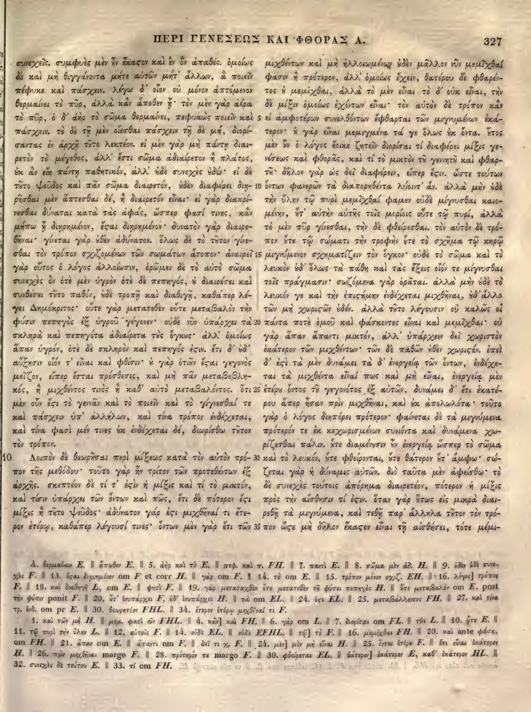

327a
| 1 | συνεχεῖς. συμφυὲς μὲν <choice resp="#Mugler1966"><sic>ἐν</sic><corr>οὖν</corr></choice> ἕκαστον καὶ ἐν <choice resp="#Mugler1966"><sic>ὃ</sic><corr>ὂν</corr></choice> ἀπαθές. ὁμοίως | 0.90 |
|---|---|---|
| 2 | δὲ καὶ μὴ θιγγάνοντα μήτε αὐτῶν μήτ' ἄλλων, ἃ ποιεῖν | 0.90 |
| 3 | πέφυκε καὶ πάσχειν. λέγω δ' οἷον οὐ μόνον ἁπτόμενον | 0.90 |
| 4 | θερμαίνει τὸ πῦρ, <choice resp="#hathiTrustOCR"><sic>ἀλλὰ καὶ ἄποθεν</sic><corr>ἀλλὰ κἂν ἄποθεν</corr></choice>· τὸν μὲν γὰρ ἀέρα | 0.90 |
| 5 | τὸ πῦρ, ὁ δ' ἀὴρ τὸ σῶμα θερμαίνει, πεφυκὼς ποιεῖν καὶ | 0.90 |
| 6 | πάσχειν. τὸ δὲ τῇ μὲν οἴεσθαι πάσχειν τῇ δὲ μή, διορί- | 0.90 |
| 7 | σαντας ἐν ἀρχῇ τοῦτο λεκτέον. εἰ μὲν γὰρ μὴ πάντῃ διαι- | 0.90 |
| 8 | ρετὸν τὸ μέγεθος, ἀλλ' ἔστι σῶμα ἀδιαίρετον ἢ πλάτος, | 0.90 |
| 9 | οὐκ ἂν εἴη πάντῃ παθητικόν, ἀλλ' οὐδὲ συνεχὲς οὐδέν· εἰ δὲ | 0.90 |
| 10 | τοῦτο ψεῦδος καὶ πᾶν σῶμα διαιρετόν, οὐδὲν διαφέρει διῃ- | 0.90 |
| 11 | ρῆσθαι μὲν ἅπτεσθαι δέ, ἢ διαιρετὸν εἶναι· εἰ γὰρ διακρί- | 0.90 |
| 12 | νεσθαι δύναται κατὰ τὰς ἁφάς, ὥσπερ φασί τινες, <choice resp="#Mugler1966"><sic>καὶ</sic><corr>κἂν</corr></choice> | 0.90 |
| 13 | μήπω ᾖ διῃρημένον, <choice resp="#hathiTrustOCR"><sic>ἔςαι</sic><corr>ἔσται</corr></choice> διῃρημένον· δυνατὸν γὰρ διαιρε- | 0.90 |
| 14 | θῆναι· γίνεται γὰρ <choice resp="#Mugler1966"><sic>οὐδὲν</sic><corr>οὐθὲν</corr></choice> ἀδύνατον. ὅλως δὲ <choice resp="#hathiTrustOCR"><sic>τὸ τοῦτο</sic><corr>τὸ τῖτον</corr></choice> γίνε- | 0.90 |
| 15 | σθαι τὸν τρόπον σχιζομένων τῶν σωμάτων ἄτοπον· ἀναιρεῖ | 0.90 |
| 16 | γὰρ οὗτος ὁ λόγος ἀλλοίωσιν, ὁρῶμεν δὲ τὸ αὐτὸ σῶμα | 0.90 |
| 17 | συνεχὲς ὂν ὁτὲ μὲν ὑγρὸν ὁτὲ δὲ πεπηγός, οὐ διαιρέσει καὶ | 0.90 |
| 18 | συνθέσει τοῦτο παθόν, οὐδὲ τροπῇ καὶ <choice resp="#hathiTrustOCR"><sic>διαθίγῇ</sic><corr>διαθιγῇ</corr></choice>, καθάπερ λέ- | 0.90 |
| 19 | γει Δημόκριτος· οὔτε γὰρ μετατεθὲν οὔτε μεταβαλὸν τὴν | 0.90 |
| 20 | φύσιν πεπηγὸς ἐξ ὑγροῦ γέγονεν· οὐδὲ νῦν ὑπάρχει τὰ | 0.90 |
| 21 | σκληρὰ καὶ πεπηγότα ἀδιαίρετα τοῖς ὄγκοις· ἀλλ' ὁμοίως | 0.90 |
| 22 | ἅπαν ὑγρόν, ὁτὲ δὲ σκληρὸν καὶ πεπηγός <choice resp="#hathiTrustOCR"><sic>ἐςιν</sic><corr>ἐστιν</corr></choice>. ἔτι δ' οὐδ' | 0.90 |
| 23 | αὔξησιν οἷόν τ' εἶναι καὶ φθίσιν· <choice resp="#Mugler1966"><sic>ἢ</sic><corr>οὐ</corr></choice> γὰρ οἷόν τ' <choice resp="#hathiTrustOCR"><sic>ἔςαι</sic><corr>ἔσται</corr></choice> γεγονὸς | 0.90 |
| 24 | μεῖζον, εἴπερ ἔσται πρόσθεσις, καὶ μὴ πᾶν μεταβεβλη- | 0.90 |
| 25 | κός, ἢ μιχθέντος τινὸς ἢ καθ' αὑτὸ μεταβαλόντος. ὅτι | 0.90 |
| 26 | μὲν οὖν <choice resp="#hathiTrustOCR"><sic>ἔςι</sic><corr>ἔστι</corr></choice> τὸ γεννᾶν καὶ τὸ ποιεῖν καὶ τὸ <choice resp="#Mugler1966"><sic>γίγνεσθαί</sic><corr>γίνεσθαί</corr></choice> τε | 0.90 |
| 27 | καὶ πάσχειν ὑπ' ἀλλήλων, καὶ τίνα τρόπον ἐνδέχεται, | 0.90 |
| 28 | καὶ τίνα φασὶ μέν τινες <choice resp="#Mugler1966"><sic>ὡς</sic><corr>οὐκ</corr></choice> ἐνδέχεται δέ, διωρίσθω τὸν | 0.90 |
| 29 | τρόπον. | 0.90 |
| Book 1, chapter 10 | ||
| 30 | Λοιπὸν δὲ θεωρῆσαι περὶ μίξεως κατὰ τὸν αὐτὸν τρό- | 0.90 |
| 31 | πον τῆς μεθόδου· τοῦτο γὰρ ἦν τρίτον τῶν προτεθέντων ἐξ | 0.90 |
| 32 | ἀρχῆς. σκεπτέον δὲ τί τ' <choice resp="#hathiTrustOCR"><sic>ἐςὶν</sic><corr>ἐστὶν</corr></choice> ἡ μίξις καὶ τί τὸ μικτόν, | 0.90 |
| 33 | καὶ τίσιν ὑπάρχει τῶν ὄντων καὶ πῶς, ἔτι δὲ πότερον <choice resp="#hathiTrustOCR"><sic>ἔςι</sic><corr>ἔστι</corr></choice> | 0.90 |
| 34 | μίξις ἢ τοῦτο ψεῦδος· ἀδύνατον γάρ <choice resp="#hathiTrustOCR"><sic>ἐςι</sic><corr>ἐστι</corr></choice> μιχθῆναί τι ἕτε- | 0.90 |
| 35 | ρον ἑτέρῳ, καθάπερ λέγουσί τινες· ὄντων μὲν γὰρ ἔτι τῶν | 0.90 |
327b
| 1 | μιχθέντων καὶ μὴ ἠλλοιωμένων οὐδὲν μᾶλλον νῦν μεμῖχθαί | 0.95 |
|---|---|---|
| 2 | φασιν ἢ πρότερον, ἀλλ’ ὁμοίως ἔχειν, θατέρου δὲ φθαρέν- | 0.95 |
| 3 | τος <choice resp="#Mugler1966"><sic>ὃ</sic><corr>οὐ</corr></choice> μεμῖχθαι, ἀλλὰ τὸ μὲν εἶναι τὸ δ’ οὐκ εἶναι, τὴν | 0.95 |
| 4 | δὲ μίξιν ὁμοίως ἐχόντων εἶναι· τὸν αὐτὸν δὲ τρόπον κἂν | 0.95 |
| 5 | εἰ ἐξ ἀμφοτέρων συνελθόντων ἔφθαρται τῶν μιγνυμένων ἑκά- | 0.95 |
| 6 | τερον· <choice resp="#Mugler1966"><sic>ἢ</sic><corr>οὐ</corr></choice> γὰρ εἶναι μεμιγμένα τὰ γε ὅλως <choice resp="#Mugler1966"><sic>ὡς</sic><corr>οὐκ</corr></choice> ὄντα. <choice resp="#Mugler1966"><sic>ἔσται</sic><corr>Οὗτος</corr></choice> | 0.95 |
| 7 | μὲν οὖν ὁ λόγος ἔοικε ζητεῖν διορίσαι τί διαφέρει μίξις γε- | 0.95 |
| 8 | νέσεως καὶ φθορᾶς, καὶ τί τὸ μικτὸν <choice resp="#Mugler1966"><sic>τῷ</sic><corr>τοῦ</corr></choice> γενητῷ καὶ φθαρ- | 0.95 |
| 9 | τῷ. δῆλον γὰρ ὡς δεῖ διαφέρειν, εἴπερ ἐστίν. ὥστε τούτων | 0.95 |
| 10 | ὄντων φανερῶν τὰ διαπορηθέντα λύοιτ’ ἄν. ἀλλὰ μὴν οὐδὲ | 0.95 |
| 11 | τὴν ὕλην τῷ πυρὶ μεμῖχθαί φαμεν οὐδὲ μίγνυσθαι καιο- | 0.95 |
| 12 | μένην, <choice resp="#Mugler1966"><sic>ὅτ</sic><corr>οὔτ</corr></choice>’ αὐτὴν αὑτῆς τοῖς μορίοις οὔτε τῷ πυρί, ἀλλὰ | 0.95 |
| 13 | τὸ μὲν πῦρ γίνεσθαι, τὴν δὲ φθείρεσθαι. τὸν αὐτὸν δὲ τρό- | 0.95 |
| 14 | πον <choice resp="#Mugler1966"><sic>ὅτε</sic><corr>οὔτε</corr></choice> τῷ σώματι τὴν τροφὴν <choice resp="#Mugler1966"><sic>ὅτε</sic><corr>οὔτε</corr></choice> τὸ σχῆμα τῷ κηρῷ | 0.95 |
| 15 | μιγνύμενον σχηματίζειν τὸν ὄγκον· οὐδὲ τὸ σῶμα καὶ τὸ | 0.95 |
| 16 | λευκὸν οὐδ’ ὅλως τὰ πάθη καὶ τὰς ἕξεις οἷόν τε μίγνυσθαι | 0.95 |
| 17 | τοῖς πράγμασιν· σῳζόμενα γὰρ ὁρᾶται. ἀλλὰ μὴν οὐδὲ τὸ | 0.95 |
| 18 | λευκόν γε καὶ τὴν ἐπιστήμην ἐνδέχεται μιχθῆναι, οὐδ’ ἄλλο | 0.95 |
| 19 | τῶν μὴ χωριστῶν οὐδέν. ἀλλὰ τοῦτο λέγουσιν οὐ καλῶς οἱ | 0.95 |
| 20 | πάντα ποτὲ ὁμοῦ καὶ φάσκοντες εἶναι καὶ μεμῖχθαι· οὐ | 0.95 |
| 21 | γὰρ ἅπαν ἅπαντι μικτόν, ἀλλ’ ὑπάρχειν δεῖ χωριστὸν | 0.95 |
| 22 | ἑκάτερον τῶν μιχθέντων· τῶν δὲ παθῶν οὐθὲν χωριστόν. ἐπεὶ | 0.95 |
| 23 | δ’ ἐστὶ τὰ μὲν δυνάμει τὰ δ’ ἐνεργείᾳ τῶν ὄντων, ἐνδέχε- | 0.95 |
| 24 | ται τὰ μιχθέντα εἶναί πως καὶ μὴ εἶναι, ἐνεργείᾳ μὲν | 0.95 |
| 25 | <choice resp="#Mugler1966"><sic>ἕτερον</sic><corr>ἑτέρου</corr></choice> ὄντος τοῦ γεγονότος ἐξ αὐτῶν, δυνάμει δ’ ἔτι ἑκατέ- | 0.95 |
| 26 | ρου ἅπερ ἦσαν πρὶν μιχθῆναι, καὶ οὐκ ἀπολωλότα· τοῦτο | 0.95 |
| 27 | γὰρ ὁ λόγος διηπόρει πρότερον. φαίνεται δὲ τὰ μιγνύμενα | 0.95 |
| 28 | πρότερόν τε ἐκ κεχωρισμένων συνιόντα καὶ δυνάμενα χω- | 0.95 |
| 29 | ρίζεσθαι πάλιν. <choice resp="#Mugler1966"><sic>ὅτε</sic><corr>οὔτε</corr></choice> διαμένουσιν <choice resp="#Mugler1966"><sic>ἐν</sic><corr>οὖν</corr></choice> ἐνεργείᾳ ὥσπερ τὸ σῶμα | 0.95 |
| 30 | καὶ τὸ λευκόν, <choice resp="#Mugler1966"><sic>ὅτε</sic><corr>οὔτε</corr></choice> φθείρονται, <choice resp="#Mugler1966"><sic>ὅτε</sic><corr>οὔτε</corr></choice> θάτερον <choice resp="#Mugler1966"><sic>ὅτ</sic><corr>οὔτ</corr></choice>’ ἄμφω· σῴ- | 0.95 |
| 31 | ζεται γὰρ ἡ δύναμις αὐτῶν. διὸ ταῦτα μὲν ἀφείσθω· τὸ | 0.95 |
| 32 | δὲ συνεχὲς τούτοις ἀπόρημα διαιρετέον, πότερον ἡ μίξις | 0.95 |
| 33 | πρὸς τὴν αἴσθησίν τί ἐστιν. ὅταν γὰρ οὕτως εἰς μικρὰ διαι- | 0.95 |
| 34 | ρεθῇ τὰ μιγνύμενα, καὶ τεθῇ παρ’ ἄλληλα τοῦτον τὸν τρό- | 0.95 |
| 35 | πον ὥστε μὴ δῆλον <choice resp="#hathiTrustOCR"><sic>ἕκαςον</sic><corr>ἕκαστον</corr></choice> εἶναι τῇ αἰσθήσει, τότε μέμι- | 0.95 |
Textual apparatus
- n1 [page] 18. καὶ διαδηγῇ L, om E. ‖ φησὶ F. ‖ 19. γὰρ μεταταχθὲν ὥτε μετατεθὲν τῇ φύσει πηκτηνὸς H. ‖ ὥτε μεταβαλὸν om E, post τὴν φύσιν ponit F. ‖ 20. ὥτ’ ἐνυπάρχει F, ὡδ’ ἐνυπάρχει H. ‖ τὰ om EL. ‖ 24. ἔστι EL. ‖ 25. μεταβάλλοντος FH. ‖ 27. καὶ τίνα τρ. ἐνδ. om pr E. ‖ 30. θεωρητέον FHL. ‖ 34. ἕτερον ἑτέρῳ μιχθῆναί τι F.
- n2 [page] 1. καὶ τῶν μὴ H. ‖ μεμ. φασὶ νῦν FHL. ‖ 4. κἂν] καὶ FH. ‖ 6. γὰρ om L. ‖ 7. διορίσαι om FL. ‖ τίνι L. ‖ 10. ὥτε E. ‖ 11. τῷ πυρὶ τὴν ὕλην L. ‖ 12. αὐτοῖς F. ‖ 14. οὐδὲ EL. ‖ οὐδὲ EFHL. ‖ τῷ] τὸ F. ‖ 16. μεμίχθαι FH. ‖ 20. καὶ ante φάσκ. om FH. ‖ 21. ἅπαν om E. ‖ ἅπαντι om F. ‖ δεῖ τι χ. F. ‖ 24. μὲν] μὲν μὴ εἶναι H. ‖ 25. ὄντως ἑτέρῳ F. ‖ ἔτι εἶναι ἑκάτερον H. ‖ 26. πρὶν μιχθῆναι margo F. ‖ 28. πρότερόν τε margo F. ‖ 30. φθείρεται EL. ‖ θάτερον] ἑκάτερον E, καθ’ ἑκάτερον HL. ‖ 32. συνεχὲς δὲ τούτου E. ‖ 33. τί om FH.
Verifier issues
- No verifier or gutter-overlap issues.
All Greek-word differences from Mugler 1966 (68)
This inventory is exhaustive at the Greek-word level; it does not imply that either reading is an error.
- orthographic_or_diacritic 327a1: συμφυὲς ↔ Συμφυὲς (anchors: συνεχεῖς … μὲν)
- replace 327a1: ἐν ↔ οὖν (anchors: μὲν … ἕκαστον)
- orthographic_or_diacritic 327a1: ἐν ↔ ἓν (anchors: καὶ … ὃ)
- replace 327a1: ὃ ↔ ὂν (anchors: ἐν … ἀπαθές)
- orthographic_or_diacritic 327a1: ὁμοίως ↔ Ὁμοίως (anchors: ἀπαθές … δὲ)
- orthographic_or_diacritic 327a2: αὐτῶν ↔ αὑτῶν (anchors: μήτε … μήτ)
- orthographic_or_diacritic 327a3: λέγω ↔ Λέγω (anchors: πάσχειν … δ)
- replace 327a4: καὶ ↔ κἂν (anchors: ἀλλὰ … ἄποθεν)
- insert 327a4: ∅ ↔ ᾖ (anchors: ἄποθεν … τὸν)
- orthographic_or_diacritic 327a6: τὸ ↔ Τὸ (anchors: πάσχειν … δὲ)
- orthographic_or_diacritic 327a7: εἰ ↔ Εἰ (anchors: λεκτέον … μὲν)
- replace 327a12: καὶ ↔ κἂν (anchors: τινες … μήπω)
- replace 327a14: οὐδὲν ↔ οὐθὲν (anchors: γὰρ … ἀδύνατον)
- orthographic_or_diacritic 327a14: ὅλως ↔ Ὅλως (anchors: ἀδύνατον … δὲ)
- replace 327a14: τοῦτο ↔ τοῦτον (anchors: τὸ … γίνεσθαι)
- insert 327a15: ∅ ↔ μόνον (anchors: τρόπον … σχιζομένων)
- orthographic_or_diacritic 327a18: διαθίγῇ ↔ διαθιγῇ (anchors: καὶ … καθάπερ)
- insert 327a19: ∅ ↔ μεταταχθὲν οὔτε (anchors: γὰρ … μετατεθὲν)
- delete 327a19: οὔτε μεταβαλὸν ↔ ∅ (anchors: μετατεθὲν … τὴν)
- replace 327a20: οὐδὲ νῦν ὑπάρχει ↔ οὐδ ἐνυπάρχει (anchors: γέγονεν … τὰ)
- replace 327a21: τοῖς ὄγκοις ↔ τοὺς ὄγκους (anchors: ἀδιαίρετα … ἀλλ)
- orthographic_or_diacritic 327a22: ἔτι ↔ Ἔτι (anchors: ἐστιν … δ)
- replace 327a23: ἢ ↔ οὐ (anchors: φθίσιν … γὰρ)
- replace 327a23: οἷόν τ ↔ ὁτιοῦν (anchors: γὰρ … ἔσται)
- orthographic_or_diacritic 327a25: ὅτι ↔ Ὅτι (anchors: μεταβαλόντος … μὲν)
- orthographic_or_diacritic 327a26: ἔστι ↔ ἐστὶ (anchors: οὖν … τὸ)
- replace 327a26: γίγνεσθαί ↔ γίνεσθαί (anchors: τὸ … τε)
- replace 327a28: ὡς ↔ οὐκ (anchors: τινες … ἐνδέχεται)
- insert 327a28: ∅ ↔ τοῦτον (anchors: διωρίσθω … τὸν)
- orthographic_or_diacritic 327a32: σκεπτέον ↔ Σκεπτέον (anchors: ἀρχῆς … δὲ)
- orthographic_or_diacritic 327b1: μεμῖχθαί ↔ μεμίχθαι (anchors: νῦν … φασιν)
- orthographic_or_diacritic 327b2: φασιν ↔ φασὶν (anchors: μεμῖχθαί … ἢ)
- replace 327b3: ὃ ↔ οὐ (anchors: φθαρέντος … μεμῖχθαι)
- orthographic_or_diacritic 327b3: μεμῖχθαι ↔ μεμίχθαι (anchors: ὃ … ἀλλὰ)
- delete 327b5: ἐξ ↔ ∅ (anchors: εἰ … ἀμφοτέρων)
- replace 327b6: ἢ ↔ οὐ (anchors: ἑκάτερον … γὰρ)
- orthographic_or_diacritic 327b6: τὰ ↔ τά (anchors: μεμιγμένα … γε)
- replace 327b6: ὡς ↔ οὐκ (anchors: ὅλως … ὄντα)
- replace 327b6: ἔσται ↔ Οὗτος (anchors: ὄντα … μὲν)
- replace 327b8: τῷ γενητῷ ↔ τοῦ γεννητοῦ (anchors: μικτὸν … καὶ)
- replace 327b8: φθαρτῷ ↔ φθαρτοῦ (anchors: καὶ … δῆλον)
- orthographic_or_diacritic 327b9: ἐστίν ↔ ἔστιν (anchors: εἴπερ … ὥστε)
- orthographic_or_diacritic 327b9: ὥστε ↔ Ὥστε (anchors: ἐστίν … τούτων)
- replace 327b10: λύοιτ ↔ λύοιντ (anchors: διαπορηθέντα … ἄν)
- orthographic_or_diacritic 327b10: ἀλλὰ ↔ Ἀλλὰ (anchors: ἄν … μὴν)
- orthographic_or_diacritic 327b11: μεμῖχθαί ↔ μεμίχθαι (anchors: πυρὶ … φαμεν)
- orthographic_or_diacritic 327b11: φαμεν ↔ φαμὲν (anchors: μεμῖχθαί … οὐδὲ)
- replace 327b12: ὅτ ↔ οὔτ (anchors: καιομένην … αὐτὴν)
- orthographic_or_diacritic 327b13: τὸν ↔ Τὸν (anchors: φθείρεσθαι … αὐτὸν)
- replace 327b14: ὅτε ↔ οὔτε (anchors: τρόπον … τῷ)
- replace 327b14: ὅτε ↔ οὔτε (anchors: τροφὴν … τὸ)
- orthographic_or_diacritic 327b17: σῳζόμενα ↔ σωζόμενα (anchors: πράγμασιν … γὰρ)
- orthographic_or_diacritic 327b17: ἀλλὰ ↔ Ἀλλὰ (anchors: ὁρᾶται … μὴν)
- orthographic_or_diacritic 327b19: ἀλλὰ ↔ Ἀλλὰ (anchors: οὐδέν … τοῦτο)
- delete 327b20: καὶ ↔ ∅ (anchors: ὁμοῦ … φάσκοντες)
- orthographic_or_diacritic 327b20: μεμῖχθαι ↔ μεμίχθαι (anchors: καὶ … οὐ)
- orthographic_or_diacritic 327b22: ἐπεὶ ↔ Ἐπεὶ (anchors: χωριστόν … δ)
- replace 327b25: ἕτερον ↔ ἑτέρου (anchors: μὲν … ὄντος)
- replace 327b29: ὅτε ↔ οὔτε (anchors: πάλιν … διαμένουσιν)
- replace 327b29: ἐν ↔ οὖν (anchors: διαμένουσιν … ἐνεργείᾳ)
- replace 327b30: ὅτε ↔ οὔτε (anchors: λευκόν … φθείρονται)
- replace 327b30: ὅτε ↔ οὔτε (anchors: φθείρονται … θάτερον)
- replace 327b30: ὅτ ↔ οὔτ (anchors: θάτερον … ἄμφω)
- orthographic_or_diacritic 327b30: σῴζεται ↔ σώζεται (anchors: ἄμφω … γὰρ)
- orthographic_or_diacritic 327b31: διὸ ↔ Διὸ (anchors: αὐτῶν … ταῦτα)
- orthographic_or_diacritic 327b33: αἴσθησίν ↔ αἴσθησιν (anchors: τὴν … τί)
- orthographic_or_diacritic 327b33: ὅταν ↔ Ὅταν (anchors: ἐστιν … γὰρ)
- replace 327b35: μέμι κται ↔ μέμικται (anchors: τότε … ἡ)
Encoded TEI choices (32)
- a4
#hathiTrustOCR: <choice resp="#hathiTrustOCR"><sic>ἀλλὰ καὶ ἄποθεν</sic><corr>ἀλλὰ κἂν ἄποθεν</corr></choice> (0.95) — The scan clearly shows κἂν with the acute accent on the alpha, matching the Hathi OCR witness and the apparatus note 'κἂν] καὶ FH'. - a14
#hathiTrustOCR: <choice resp="#hathiTrustOCR"><sic>τὸ τοῦτο</sic><corr>τὸ τῖτον</corr></choice> (0.90) — The scan shows τῖτον with a circumflex on the iota, not τοῦτο. - a18
#hathiTrustOCR: <choice resp="#hathiTrustOCR"><sic>διαθίγῇ</sic><corr>διαθιγῇ</corr></choice> (0.90) — The scan shows διαθιγῇ without an accent on the iota, matching the apparatus note 'καὶ διαθηγή i'. - a13
#hathiTrustOCR: <choice resp="#hathiTrustOCR"><sic>ἔςαι</sic><corr>ἔσται</corr></choice> (1.00) — Aligned Hathi στ-ligature OCR correction: deterministic repair of the Hathi internal final sigma agrees with the scan and reference crop. - a22
#hathiTrustOCR: <choice resp="#hathiTrustOCR"><sic>ἐςιν</sic><corr>ἐστιν</corr></choice> (1.00) — Aligned Hathi στ-ligature OCR correction: deterministic repair of the Hathi internal final sigma agrees with the scan and reference crop. - a23
#hathiTrustOCR: <choice resp="#hathiTrustOCR"><sic>ἔςαι</sic><corr>ἔσται</corr></choice> (1.00) — Aligned Hathi στ-ligature OCR correction: deterministic repair of the Hathi internal final sigma agrees with the scan and reference crop. - a26
#hathiTrustOCR: <choice resp="#hathiTrustOCR"><sic>ἔςι</sic><corr>ἔστι</corr></choice> (1.00) — Aligned Hathi στ-ligature OCR correction: deterministic repair of the Hathi internal final sigma agrees with the scan and reference crop. - a32
#hathiTrustOCR: <choice resp="#hathiTrustOCR"><sic>ἐςὶν</sic><corr>ἐστὶν</corr></choice> (1.00) — Aligned Hathi στ-ligature OCR correction: deterministic repair of the Hathi internal final sigma agrees with the scan and reference crop. - a33
#hathiTrustOCR: <choice resp="#hathiTrustOCR"><sic>ἔςι</sic><corr>ἔστι</corr></choice> (1.00) — Aligned Hathi στ-ligature OCR correction: deterministic repair of the Hathi internal final sigma agrees with the scan and reference crop. - a34
#hathiTrustOCR: <choice resp="#hathiTrustOCR"><sic>ἐςι</sic><corr>ἐστι</corr></choice> (1.00) — Aligned Hathi στ-ligature OCR correction: deterministic repair of the Hathi internal final sigma agrees with the scan and reference crop. - b35
#hathiTrustOCR: <choice resp="#hathiTrustOCR"><sic>ἕκαςον</sic><corr>ἕκαστον</corr></choice> (1.00) — Aligned Hathi στ-ligature OCR correction: deterministic repair of the Hathi internal final sigma agrees with the scan and reference crop. - b3
#Mugler1966: <choice resp="#Mugler1966"><sic>ὃ</sic><corr>οὐ</corr></choice> (1.00) — Control-edition confirmation of the compact Berlin Bekker ου ligature; the OCR omitted upsilon and produced an impossible or contextually invalid Greek form. - b8
#Mugler1966: <choice resp="#Mugler1966"><sic>τῷ</sic><corr>τοῦ</corr></choice> (1.00) — Control-edition confirmation of the compact Berlin Bekker ου ligature; the OCR omitted upsilon and produced an impossible or contextually invalid Greek form. - b12
#Mugler1966: <choice resp="#Mugler1966"><sic>ὅτ</sic><corr>οὔτ</corr></choice> (1.00) — Control-edition confirmation of the compact Berlin Bekker ου ligature; the OCR omitted upsilon and produced an impossible or contextually invalid Greek form. - b14
#Mugler1966: <choice resp="#Mugler1966"><sic>ὅτε</sic><corr>οὔτε</corr></choice> (1.00) — Control-edition confirmation of the compact Berlin Bekker ου ligature; the OCR omitted upsilon and produced an impossible or contextually invalid Greek form. - b14
#Mugler1966: <choice resp="#Mugler1966"><sic>ὅτε</sic><corr>οὔτε</corr></choice> (1.00) — Control-edition confirmation of the compact Berlin Bekker ου ligature; the OCR omitted upsilon and produced an impossible or contextually invalid Greek form. - b29
#Mugler1966: <choice resp="#Mugler1966"><sic>ὅτε</sic><corr>οὔτε</corr></choice> (1.00) — Control-edition confirmation of the compact Berlin Bekker ου ligature; the OCR omitted upsilon and produced an impossible or contextually invalid Greek form. - b30
#Mugler1966: <choice resp="#Mugler1966"><sic>ὅτε</sic><corr>οὔτε</corr></choice> (1.00) — Control-edition confirmation of the compact Berlin Bekker ου ligature; the OCR omitted upsilon and produced an impossible or contextually invalid Greek form. - b30
#Mugler1966: <choice resp="#Mugler1966"><sic>ὅτε</sic><corr>οὔτε</corr></choice> (1.00) — Control-edition confirmation of the compact Berlin Bekker ου ligature; the OCR omitted upsilon and produced an impossible or contextually invalid Greek form. - b30
#Mugler1966: <choice resp="#Mugler1966"><sic>ὅτ</sic><corr>οὔτ</corr></choice> (1.00) — Control-edition confirmation of the compact Berlin Bekker ου ligature; the OCR omitted upsilon and produced an impossible or contextually invalid Greek form. - a1
#Mugler1966: <choice resp="#Mugler1966"><sic>ἐν</sic><corr>οὖν</corr></choice> (0.90) — Plausible one-token difference in the globally aligned Mugler 1966; surrounding token sequence is stable. - a1
#Mugler1966: <choice resp="#Mugler1966"><sic>ὃ</sic><corr>ὂν</corr></choice> (0.90) — Plausible one-token difference in the globally aligned Mugler 1966; surrounding token sequence is stable. - a12
#Mugler1966: <choice resp="#Mugler1966"><sic>καὶ</sic><corr>κἂν</corr></choice> (0.90) — Plausible one-token difference in the globally aligned Mugler 1966; surrounding token sequence is stable. - a14
#Mugler1966: <choice resp="#Mugler1966"><sic>οὐδὲν</sic><corr>οὐθὲν</corr></choice> (0.90) — Plausible one-token difference in the globally aligned Mugler 1966; surrounding token sequence is stable. - a23
#Mugler1966: <choice resp="#Mugler1966"><sic>ἢ</sic><corr>οὐ</corr></choice> (0.90) — Plausible one-token difference in the globally aligned Mugler 1966; surrounding token sequence is stable. - a26
#Mugler1966: <choice resp="#Mugler1966"><sic>γίγνεσθαί</sic><corr>γίνεσθαί</corr></choice> (0.90) — Plausible one-token difference in the globally aligned Mugler 1966; surrounding token sequence is stable. - a28
#Mugler1966: <choice resp="#Mugler1966"><sic>ὡς</sic><corr>οὐκ</corr></choice> (0.90) — Plausible one-token difference in the globally aligned Mugler 1966; surrounding token sequence is stable. - b6
#Mugler1966: <choice resp="#Mugler1966"><sic>ἢ</sic><corr>οὐ</corr></choice> (0.90) — Plausible one-token difference in the globally aligned Mugler 1966; surrounding token sequence is stable. - b6
#Mugler1966: <choice resp="#Mugler1966"><sic>ὡς</sic><corr>οὐκ</corr></choice> (0.90) — Plausible one-token difference in the globally aligned Mugler 1966; surrounding token sequence is stable. - b6
#Mugler1966: <choice resp="#Mugler1966"><sic>ἔσται</sic><corr>Οὗτος</corr></choice> (0.90) — Plausible one-token difference in the globally aligned Mugler 1966; surrounding token sequence is stable. - b25
#Mugler1966: <choice resp="#Mugler1966"><sic>ἕτερον</sic><corr>ἑτέρου</corr></choice> (0.90) — Plausible one-token difference in the globally aligned Mugler 1966; surrounding token sequence is stable. - b29
#Mugler1966: <choice resp="#Mugler1966"><sic>ἐν</sic><corr>οὖν</corr></choice> (0.90) — Plausible one-token difference in the globally aligned Mugler 1966; surrounding token sequence is stable.
Unmatched Hathi OCR words (143)
Compared after στ/ου normalization and scan-attested line-end dehyphenation. OCR line numbers refer to the Hathi text file.
| Normalized | Raw OCR | OCR line | Context |
|---|---|---|---|
| περι | περι | 1 | ΠΕΡΙ ΓΕΝΕΣΕΩΣ ΚΑΙ ΦΘΟΡΑΣ Α. ⏎ 327 |
| γενεσεως | γενεσεως | 1 | ΠΕΡΙ ΓΕΝΕΣΕΩΣ ΚΑΙ ΦΘΟΡΑΣ Α. ⏎ 327 |
| και | και | 1 | ΠΕΡΙ ΓΕΝΕΣΕΩΣ ΚΑΙ ΦΘΟΡΑΣ Α. ⏎ 327 |
| φθορας | φθορας | 1 | ΠΕΡΙ ΓΕΝΕΣΕΩΣ ΚΑΙ ΦΘΟΡΑΣ Α. ⏎ 327 |
| α | α | 1 | ΠΕΡΙ ΓΕΝΕΣΕΩΣ ΚΑΙ ΦΘΟΡΑΣ Α. ⏎ 327 |
| ἔν | ἔν | 5 | " ⏎ συνεχεῖς. συμφυὲς μὲν ἔν ἔκαςον καὶ ἓν ἐν ἀπαθές. ὁμοίως μιχθέντων καὶ μὴ ἠλλοιωμένων ἐδὲν μᾶλλον νῦν μεμῖχθαί ⏎ δὲ καὶ μὴ θιγγάνοντα μήτε αὑτῶν μήτ᾽ ἄλλων, ἃ ποιεῖν φασιν ἢ πρότερον, ἀλλ᾿ ὁμοίως ἔχειν, θατέρου δὲ φθαρέν |
| ἔκαστον | ἔκαςον | 5 | " ⏎ συνεχεῖς. συμφυὲς μὲν ἔν ἔκαςον καὶ ἓν ἐν ἀπαθές. ὁμοίως μιχθέντων καὶ μὴ ἠλλοιωμένων ἐδὲν μᾶλλον νῦν μεμῖχθαί ⏎ δὲ καὶ μὴ θιγγάνοντα μήτε αὑτῶν μήτ᾽ ἄλλων, ἃ ποιεῖν φασιν ἢ πρότερον, ἀλλ᾿ ὁμοίως ἔχειν, θατέρου δὲ φθαρέν |
| ἓν | ἓν | 5 | " ⏎ συνεχεῖς. συμφυὲς μὲν ἔν ἔκαςον καὶ ἓν ἐν ἀπαθές. ὁμοίως μιχθέντων καὶ μὴ ἠλλοιωμένων ἐδὲν μᾶλλον νῦν μεμῖχθαί ⏎ δὲ καὶ μὴ θιγγάνοντα μήτε αὑτῶν μήτ᾽ ἄλλων, ἃ ποιεῖν φασιν ἢ πρότερον, ἀλλ᾿ ὁμοίως ἔχειν, θατέρου δὲ φθαρέν |
| αὑτῶν | αὑτῶν | 6 | συνεχεῖς. συμφυὲς μὲν ἔν ἔκαςον καὶ ἓν ἐν ἀπαθές. ὁμοίως μιχθέντων καὶ μὴ ἠλλοιωμένων ἐδὲν μᾶλλον νῦν μεμῖχθαί ⏎ δὲ καὶ μὴ θιγγάνοντα μήτε αὑτῶν μήτ᾽ ἄλλων, ἃ ποιεῖν φασιν ἢ πρότερον, ἀλλ᾿ ὁμοίως ἔχειν, θατέρου δὲ φθαρέν ⏎ πέφυκε καὶ πάσχειν. λέγω δ᾽ οἷον οὐ μόνον ἁπτόμενον τος 8 μεμίχθαι, ἀλλὰ τὸ μὲν εἶναι τὸ δ᾽ οὐκ εἶναι, τὴν |
| μήτ᾽ | μήτ᾽ | 6 | συνεχεῖς. συμφυὲς μὲν ἔν ἔκαςον καὶ ἓν ἐν ἀπαθές. ὁμοίως μιχθέντων καὶ μὴ ἠλλοιωμένων ἐδὲν μᾶλλον νῦν μεμῖχθαί ⏎ δὲ καὶ μὴ θιγγάνοντα μήτε αὑτῶν μήτ᾽ ἄλλων, ἃ ποιεῖν φασιν ἢ πρότερον, ἀλλ᾿ ὁμοίως ἔχειν, θατέρου δὲ φθαρέν ⏎ πέφυκε καὶ πάσχειν. λέγω δ᾽ οἷον οὐ μόνον ἁπτόμενον τος 8 μεμίχθαι, ἀλλὰ τὸ μὲν εἶναι τὸ δ᾽ οὐκ εἶναι, τὴν |
| ἀλλ᾿ | ἀλλ᾿ | 6 | συνεχεῖς. συμφυὲς μὲν ἔν ἔκαςον καὶ ἓν ἐν ἀπαθές. ὁμοίως μιχθέντων καὶ μὴ ἠλλοιωμένων ἐδὲν μᾶλλον νῦν μεμῖχθαί ⏎ δὲ καὶ μὴ θιγγάνοντα μήτε αὑτῶν μήτ᾽ ἄλλων, ἃ ποιεῖν φασιν ἢ πρότερον, ἀλλ᾿ ὁμοίως ἔχειν, θατέρου δὲ φθαρέν ⏎ πέφυκε καὶ πάσχειν. λέγω δ᾽ οἷον οὐ μόνον ἁπτόμενον τος 8 μεμίχθαι, ἀλλὰ τὸ μὲν εἶναι τὸ δ᾽ οὐκ εἶναι, τὴν |
| φθαρέν | φθαρέν | 6 | συνεχεῖς. συμφυὲς μὲν ἔν ἔκαςον καὶ ἓν ἐν ἀπαθές. ὁμοίως μιχθέντων καὶ μὴ ἠλλοιωμένων ἐδὲν μᾶλλον νῦν μεμῖχθαί ⏎ δὲ καὶ μὴ θιγγάνοντα μήτε αὑτῶν μήτ᾽ ἄλλων, ἃ ποιεῖν φασιν ἢ πρότερον, ἀλλ᾿ ὁμοίως ἔχειν, θατέρου δὲ φθαρέν ⏎ πέφυκε καὶ πάσχειν. λέγω δ᾽ οἷον οὐ μόνον ἁπτόμενον τος 8 μεμίχθαι, ἀλλὰ τὸ μὲν εἶναι τὸ δ᾽ οὐκ εἶναι, τὴν |
| δ᾽ | δ᾽ | 7 | δὲ καὶ μὴ θιγγάνοντα μήτε αὑτῶν μήτ᾽ ἄλλων, ἃ ποιεῖν φασιν ἢ πρότερον, ἀλλ᾿ ὁμοίως ἔχειν, θατέρου δὲ φθαρέν ⏎ πέφυκε καὶ πάσχειν. λέγω δ᾽ οἷον οὐ μόνον ἁπτόμενον τος 8 μεμίχθαι, ἀλλὰ τὸ μὲν εἶναι τὸ δ᾽ οὐκ εἶναι, τὴν ⏎ θερμαίνει τὸ πῦρ, ἀλλὰ κἂν ἄποθεν ᾖ· τὸν μὲν γὰρ ἀέρα δὲ μίξιν ὁμοίως ἐχόντων εἶναι· τὸν αὐτὸν δὲ τρίπον κἂν |
| τος | τος | 7 | δὲ καὶ μὴ θιγγάνοντα μήτε αὑτῶν μήτ᾽ ἄλλων, ἃ ποιεῖν φασιν ἢ πρότερον, ἀλλ᾿ ὁμοίως ἔχειν, θατέρου δὲ φθαρέν ⏎ πέφυκε καὶ πάσχειν. λέγω δ᾽ οἷον οὐ μόνον ἁπτόμενον τος 8 μεμίχθαι, ἀλλὰ τὸ μὲν εἶναι τὸ δ᾽ οὐκ εἶναι, τὴν ⏎ θερμαίνει τὸ πῦρ, ἀλλὰ κἂν ἄποθεν ᾖ· τὸν μὲν γὰρ ἀέρα δὲ μίξιν ὁμοίως ἐχόντων εἶναι· τὸν αὐτὸν δὲ τρίπον κἂν |
| δ᾽ | δ᾽ | 7 | δὲ καὶ μὴ θιγγάνοντα μήτε αὑτῶν μήτ᾽ ἄλλων, ἃ ποιεῖν φασιν ἢ πρότερον, ἀλλ᾿ ὁμοίως ἔχειν, θατέρου δὲ φθαρέν ⏎ πέφυκε καὶ πάσχειν. λέγω δ᾽ οἷον οὐ μόνον ἁπτόμενον τος 8 μεμίχθαι, ἀλλὰ τὸ μὲν εἶναι τὸ δ᾽ οὐκ εἶναι, τὴν ⏎ θερμαίνει τὸ πῦρ, ἀλλὰ κἂν ἄποθεν ᾖ· τὸν μὲν γὰρ ἀέρα δὲ μίξιν ὁμοίως ἐχόντων εἶναι· τὸν αὐτὸν δὲ τρίπον κἂν |
| τρίπον | τρίπον | 8 | πέφυκε καὶ πάσχειν. λέγω δ᾽ οἷον οὐ μόνον ἁπτόμενον τος 8 μεμίχθαι, ἀλλὰ τὸ μὲν εἶναι τὸ δ᾽ οὐκ εἶναι, τὴν ⏎ θερμαίνει τὸ πῦρ, ἀλλὰ κἂν ἄποθεν ᾖ· τὸν μὲν γὰρ ἀέρα δὲ μίξιν ὁμοίως ἐχόντων εἶναι· τὸν αὐτὸν δὲ τρίπον κἂν ⏎ τὸ πῦρ, ὁ δ᾽ ἀὴρ τὸ σῶμα θερμαίνει, πεφυκὼς ποιεῖν καὶ 5 εἰ ἀμφοτέρων συνελθόντων ἔφθαρται τῶν μιγνυμένων ἑκά |
| δ᾽ | δ᾽ | 9 | θερμαίνει τὸ πῦρ, ἀλλὰ κἂν ἄποθεν ᾖ· τὸν μὲν γὰρ ἀέρα δὲ μίξιν ὁμοίως ἐχόντων εἶναι· τὸν αὐτὸν δὲ τρίπον κἂν ⏎ τὸ πῦρ, ὁ δ᾽ ἀὴρ τὸ σῶμα θερμαίνει, πεφυκὼς ποιεῖν καὶ 5 εἰ ἀμφοτέρων συνελθόντων ἔφθαρται τῶν μιγνυμένων ἑκά ⏎ πάσχειν. τὸ δὲ τῇ μὲν οἴεσθαι πάσχειν τῇ δὲ μή, διορί- τερον· ν γὰρ εἶναι μεμιγμένα τά γε ὅλως ἐκ ὄντα. ὗτος |
| ἑκά | ἑκά | 9 | θερμαίνει τὸ πῦρ, ἀλλὰ κἂν ἄποθεν ᾖ· τὸν μὲν γὰρ ἀέρα δὲ μίξιν ὁμοίως ἐχόντων εἶναι· τὸν αὐτὸν δὲ τρίπον κἂν ⏎ τὸ πῦρ, ὁ δ᾽ ἀὴρ τὸ σῶμα θερμαίνει, πεφυκὼς ποιεῖν καὶ 5 εἰ ἀμφοτέρων συνελθόντων ἔφθαρται τῶν μιγνυμένων ἑκά ⏎ πάσχειν. τὸ δὲ τῇ μὲν οἴεσθαι πάσχειν τῇ δὲ μή, διορί- τερον· ν γὰρ εἶναι μεμιγμένα τά γε ὅλως ἐκ ὄντα. ὗτος |
| τερον | τερον | 10 | τὸ πῦρ, ὁ δ᾽ ἀὴρ τὸ σῶμα θερμαίνει, πεφυκὼς ποιεῖν καὶ 5 εἰ ἀμφοτέρων συνελθόντων ἔφθαρται τῶν μιγνυμένων ἑκά ⏎ πάσχειν. τὸ δὲ τῇ μὲν οἴεσθαι πάσχειν τῇ δὲ μή, διορί- τερον· ν γὰρ εἶναι μεμιγμένα τά γε ὅλως ἐκ ὄντα. ὗτος ⏎ σαντας ἐν ἀρχῇ τοτο λεκτέον. εἰ μὲν γὰρ μὴ πάντῃ διαι- μὲν ἦν ὁ λόγος ἔοικε ζητεῖν διορίσαι τί διαφέρει μίξις γε |
| ν | ν | 10 | τὸ πῦρ, ὁ δ᾽ ἀὴρ τὸ σῶμα θερμαίνει, πεφυκὼς ποιεῖν καὶ 5 εἰ ἀμφοτέρων συνελθόντων ἔφθαρται τῶν μιγνυμένων ἑκά ⏎ πάσχειν. τὸ δὲ τῇ μὲν οἴεσθαι πάσχειν τῇ δὲ μή, διορί- τερον· ν γὰρ εἶναι μεμιγμένα τά γε ὅλως ἐκ ὄντα. ὗτος ⏎ σαντας ἐν ἀρχῇ τοτο λεκτέον. εἰ μὲν γὰρ μὴ πάντῃ διαι- μὲν ἦν ὁ λόγος ἔοικε ζητεῖν διορίσαι τί διαφέρει μίξις γε |
| τά | τά | 10 | τὸ πῦρ, ὁ δ᾽ ἀὴρ τὸ σῶμα θερμαίνει, πεφυκὼς ποιεῖν καὶ 5 εἰ ἀμφοτέρων συνελθόντων ἔφθαρται τῶν μιγνυμένων ἑκά ⏎ πάσχειν. τὸ δὲ τῇ μὲν οἴεσθαι πάσχειν τῇ δὲ μή, διορί- τερον· ν γὰρ εἶναι μεμιγμένα τά γε ὅλως ἐκ ὄντα. ὗτος ⏎ σαντας ἐν ἀρχῇ τοτο λεκτέον. εἰ μὲν γὰρ μὴ πάντῃ διαι- μὲν ἦν ὁ λόγος ἔοικε ζητεῖν διορίσαι τί διαφέρει μίξις γε |
| ὗτος | ὗτος | 10 | τὸ πῦρ, ὁ δ᾽ ἀὴρ τὸ σῶμα θερμαίνει, πεφυκὼς ποιεῖν καὶ 5 εἰ ἀμφοτέρων συνελθόντων ἔφθαρται τῶν μιγνυμένων ἑκά ⏎ πάσχειν. τὸ δὲ τῇ μὲν οἴεσθαι πάσχειν τῇ δὲ μή, διορί- τερον· ν γὰρ εἶναι μεμιγμένα τά γε ὅλως ἐκ ὄντα. ὗτος ⏎ σαντας ἐν ἀρχῇ τοτο λεκτέον. εἰ μὲν γὰρ μὴ πάντῃ διαι- μὲν ἦν ὁ λόγος ἔοικε ζητεῖν διορίσαι τί διαφέρει μίξις γε |
| τοτο | τοτο | 11 | πάσχειν. τὸ δὲ τῇ μὲν οἴεσθαι πάσχειν τῇ δὲ μή, διορί- τερον· ν γὰρ εἶναι μεμιγμένα τά γε ὅλως ἐκ ὄντα. ὗτος ⏎ σαντας ἐν ἀρχῇ τοτο λεκτέον. εἰ μὲν γὰρ μὴ πάντῃ διαι- μὲν ἦν ὁ λόγος ἔοικε ζητεῖν διορίσαι τί διαφέρει μίξις γε ⏎ ρετὸν τὸ μέγεθος, ἀλλ᾽ ἔστι σῶμα ἀδιαίρετον ἢ πλάτος, νέσεως καὶ φθορᾶς, καὶ τί τὸ μικτὸν τῇ γεννητὲς καὶ φθαρ- |
| ἀλλ᾽ | ἀλλ᾽ | 12 | σαντας ἐν ἀρχῇ τοτο λεκτέον. εἰ μὲν γὰρ μὴ πάντῃ διαι- μὲν ἦν ὁ λόγος ἔοικε ζητεῖν διορίσαι τί διαφέρει μίξις γε ⏎ ρετὸν τὸ μέγεθος, ἀλλ᾽ ἔστι σῶμα ἀδιαίρετον ἢ πλάτος, νέσεως καὶ φθορᾶς, καὶ τί τὸ μικτὸν τῇ γεννητὲς καὶ φθαρ- ⏎ ἐκ ἂν εἴη πάντῃ παθητικόν, ἀλλ᾽ ἐδὲ συνεχὲς ἐδέν· εἰ δὲ τῇ· δῆλον γὰρ ὡς δεῖ διαφέρειν, εἴπερ ἔςιν. ὥστε τούτων |
| νέσεως | νέσεως | 12 | σαντας ἐν ἀρχῇ τοτο λεκτέον. εἰ μὲν γὰρ μὴ πάντῃ διαι- μὲν ἦν ὁ λόγος ἔοικε ζητεῖν διορίσαι τί διαφέρει μίξις γε ⏎ ρετὸν τὸ μέγεθος, ἀλλ᾽ ἔστι σῶμα ἀδιαίρετον ἢ πλάτος, νέσεως καὶ φθορᾶς, καὶ τί τὸ μικτὸν τῇ γεννητὲς καὶ φθαρ- ⏎ ἐκ ἂν εἴη πάντῃ παθητικόν, ἀλλ᾽ ἐδὲ συνεχὲς ἐδέν· εἰ δὲ τῇ· δῆλον γὰρ ὡς δεῖ διαφέρειν, εἴπερ ἔςιν. ὥστε τούτων |
| γεννητὲς | γεννητὲς | 12 | σαντας ἐν ἀρχῇ τοτο λεκτέον. εἰ μὲν γὰρ μὴ πάντῃ διαι- μὲν ἦν ὁ λόγος ἔοικε ζητεῖν διορίσαι τί διαφέρει μίξις γε ⏎ ρετὸν τὸ μέγεθος, ἀλλ᾽ ἔστι σῶμα ἀδιαίρετον ἢ πλάτος, νέσεως καὶ φθορᾶς, καὶ τί τὸ μικτὸν τῇ γεννητὲς καὶ φθαρ- ⏎ ἐκ ἂν εἴη πάντῃ παθητικόν, ἀλλ᾽ ἐδὲ συνεχὲς ἐδέν· εἰ δὲ τῇ· δῆλον γὰρ ὡς δεῖ διαφέρειν, εἴπερ ἔςιν. ὥστε τούτων |
| φθαρ | φθαρ | 12 | σαντας ἐν ἀρχῇ τοτο λεκτέον. εἰ μὲν γὰρ μὴ πάντῃ διαι- μὲν ἦν ὁ λόγος ἔοικε ζητεῖν διορίσαι τί διαφέρει μίξις γε ⏎ ρετὸν τὸ μέγεθος, ἀλλ᾽ ἔστι σῶμα ἀδιαίρετον ἢ πλάτος, νέσεως καὶ φθορᾶς, καὶ τί τὸ μικτὸν τῇ γεννητὲς καὶ φθαρ- ⏎ ἐκ ἂν εἴη πάντῃ παθητικόν, ἀλλ᾽ ἐδὲ συνεχὲς ἐδέν· εἰ δὲ τῇ· δῆλον γὰρ ὡς δεῖ διαφέρειν, εἴπερ ἔςιν. ὥστε τούτων |
| ἀλλ᾽ | ἀλλ᾽ | 13 | ρετὸν τὸ μέγεθος, ἀλλ᾽ ἔστι σῶμα ἀδιαίρετον ἢ πλάτος, νέσεως καὶ φθορᾶς, καὶ τί τὸ μικτὸν τῇ γεννητὲς καὶ φθαρ- ⏎ ἐκ ἂν εἴη πάντῃ παθητικόν, ἀλλ᾽ ἐδὲ συνεχὲς ἐδέν· εἰ δὲ τῇ· δῆλον γὰρ ὡς δεῖ διαφέρειν, εἴπερ ἔςιν. ὥστε τούτων ⏎ τότο ψεῦδος καὶ πᾶν σῶμα διαιρετόν, ἐδὲν διαφέρει διη- 10 ὄντων φανερῶν τὰ διαπορηθέντα λύοιντ᾽ ἄν. ἀλλὰ μὴν ἐδὲ |
| ἔστιν | ἔςιν | 13 | ρετὸν τὸ μέγεθος, ἀλλ᾽ ἔστι σῶμα ἀδιαίρετον ἢ πλάτος, νέσεως καὶ φθορᾶς, καὶ τί τὸ μικτὸν τῇ γεννητὲς καὶ φθαρ- ⏎ ἐκ ἂν εἴη πάντῃ παθητικόν, ἀλλ᾽ ἐδὲ συνεχὲς ἐδέν· εἰ δὲ τῇ· δῆλον γὰρ ὡς δεῖ διαφέρειν, εἴπερ ἔςιν. ὥστε τούτων ⏎ τότο ψεῦδος καὶ πᾶν σῶμα διαιρετόν, ἐδὲν διαφέρει διη- 10 ὄντων φανερῶν τὰ διαπορηθέντα λύοιντ᾽ ἄν. ἀλλὰ μὴν ἐδὲ |
| τότο | τότο | 14 | ἐκ ἂν εἴη πάντῃ παθητικόν, ἀλλ᾽ ἐδὲ συνεχὲς ἐδέν· εἰ δὲ τῇ· δῆλον γὰρ ὡς δεῖ διαφέρειν, εἴπερ ἔςιν. ὥστε τούτων ⏎ τότο ψεῦδος καὶ πᾶν σῶμα διαιρετόν, ἐδὲν διαφέρει διη- 10 ὄντων φανερῶν τὰ διαπορηθέντα λύοιντ᾽ ἄν. ἀλλὰ μὴν ἐδὲ ⏎ ῥῆσθαι μὲν ἅπτεσθαι δέ, ἢ διαιρετόν εἶναι· εἰ γὰρ διακρί- τὴν ὕλην τῷ πυρὶ μεμῖχθαί φαμεν οὐδὲ μίγνυσθαι και ο |
| διη | διη | 14 | ἐκ ἂν εἴη πάντῃ παθητικόν, ἀλλ᾽ ἐδὲ συνεχὲς ἐδέν· εἰ δὲ τῇ· δῆλον γὰρ ὡς δεῖ διαφέρειν, εἴπερ ἔςιν. ὥστε τούτων ⏎ τότο ψεῦδος καὶ πᾶν σῶμα διαιρετόν, ἐδὲν διαφέρει διη- 10 ὄντων φανερῶν τὰ διαπορηθέντα λύοιντ᾽ ἄν. ἀλλὰ μὴν ἐδὲ ⏎ ῥῆσθαι μὲν ἅπτεσθαι δέ, ἢ διαιρετόν εἶναι· εἰ γὰρ διακρί- τὴν ὕλην τῷ πυρὶ μεμῖχθαί φαμεν οὐδὲ μίγνυσθαι και ο |
| λύοιντ᾽ | λύοιντ᾽ | 14 | ἐκ ἂν εἴη πάντῃ παθητικόν, ἀλλ᾽ ἐδὲ συνεχὲς ἐδέν· εἰ δὲ τῇ· δῆλον γὰρ ὡς δεῖ διαφέρειν, εἴπερ ἔςιν. ὥστε τούτων ⏎ τότο ψεῦδος καὶ πᾶν σῶμα διαιρετόν, ἐδὲν διαφέρει διη- 10 ὄντων φανερῶν τὰ διαπορηθέντα λύοιντ᾽ ἄν. ἀλλὰ μὴν ἐδὲ ⏎ ῥῆσθαι μὲν ἅπτεσθαι δέ, ἢ διαιρετόν εἶναι· εἰ γὰρ διακρί- τὴν ὕλην τῷ πυρὶ μεμῖχθαί φαμεν οὐδὲ μίγνυσθαι και ο |
| ῥῆσθαι | ῥῆσθαι | 15 | τότο ψεῦδος καὶ πᾶν σῶμα διαιρετόν, ἐδὲν διαφέρει διη- 10 ὄντων φανερῶν τὰ διαπορηθέντα λύοιντ᾽ ἄν. ἀλλὰ μὴν ἐδὲ ⏎ ῥῆσθαι μὲν ἅπτεσθαι δέ, ἢ διαιρετόν εἶναι· εἰ γὰρ διακρί- τὴν ὕλην τῷ πυρὶ μεμῖχθαί φαμεν οὐδὲ μίγνυσθαι και ο ⏎ νεσθαι δύναται κατὰ τὰς ἀφάς, ὥσπερ φασί τινες, καν μένην, ἔτ᾽ αὐτὴν αὐτῆς τοῖς μορίοις οὔτε τῷ πυρί, ἀλλὰ |
| και | και | 15 | τότο ψεῦδος καὶ πᾶν σῶμα διαιρετόν, ἐδὲν διαφέρει διη- 10 ὄντων φανερῶν τὰ διαπορηθέντα λύοιντ᾽ ἄν. ἀλλὰ μὴν ἐδὲ ⏎ ῥῆσθαι μὲν ἅπτεσθαι δέ, ἢ διαιρετόν εἶναι· εἰ γὰρ διακρί- τὴν ὕλην τῷ πυρὶ μεμῖχθαί φαμεν οὐδὲ μίγνυσθαι και ο ⏎ νεσθαι δύναται κατὰ τὰς ἀφάς, ὥσπερ φασί τινες, καν μένην, ἔτ᾽ αὐτὴν αὐτῆς τοῖς μορίοις οὔτε τῷ πυρί, ἀλλὰ |
| ο | ο | 15 | τότο ψεῦδος καὶ πᾶν σῶμα διαιρετόν, ἐδὲν διαφέρει διη- 10 ὄντων φανερῶν τὰ διαπορηθέντα λύοιντ᾽ ἄν. ἀλλὰ μὴν ἐδὲ ⏎ ῥῆσθαι μὲν ἅπτεσθαι δέ, ἢ διαιρετόν εἶναι· εἰ γὰρ διακρί- τὴν ὕλην τῷ πυρὶ μεμῖχθαί φαμεν οὐδὲ μίγνυσθαι και ο ⏎ νεσθαι δύναται κατὰ τὰς ἀφάς, ὥσπερ φασί τινες, καν μένην, ἔτ᾽ αὐτὴν αὐτῆς τοῖς μορίοις οὔτε τῷ πυρί, ἀλλὰ |
| ἀφάς | ἀφάς | 16 | ῥῆσθαι μὲν ἅπτεσθαι δέ, ἢ διαιρετόν εἶναι· εἰ γὰρ διακρί- τὴν ὕλην τῷ πυρὶ μεμῖχθαί φαμεν οὐδὲ μίγνυσθαι και ο ⏎ νεσθαι δύναται κατὰ τὰς ἀφάς, ὥσπερ φασί τινες, καν μένην, ἔτ᾽ αὐτὴν αὐτῆς τοῖς μορίοις οὔτε τῷ πυρί, ἀλλὰ ⏎ μήπω ᾗ διηρημένον, ἔςαι διηρημένον δυνατὸν γὰρ διαιρε- τὸ μὲν πῦρ γίνεσθαι, τὴν δὲ φθείρεσθαι. τὸν αὐτὸν δὲ τρό- |
| καν | καν | 16 | ῥῆσθαι μὲν ἅπτεσθαι δέ, ἢ διαιρετόν εἶναι· εἰ γὰρ διακρί- τὴν ὕλην τῷ πυρὶ μεμῖχθαί φαμεν οὐδὲ μίγνυσθαι και ο ⏎ νεσθαι δύναται κατὰ τὰς ἀφάς, ὥσπερ φασί τινες, καν μένην, ἔτ᾽ αὐτὴν αὐτῆς τοῖς μορίοις οὔτε τῷ πυρί, ἀλλὰ ⏎ μήπω ᾗ διηρημένον, ἔςαι διηρημένον δυνατὸν γὰρ διαιρε- τὸ μὲν πῦρ γίνεσθαι, τὴν δὲ φθείρεσθαι. τὸν αὐτὸν δὲ τρό- |
| μένην | μένην | 16 | ῥῆσθαι μὲν ἅπτεσθαι δέ, ἢ διαιρετόν εἶναι· εἰ γὰρ διακρί- τὴν ὕλην τῷ πυρὶ μεμῖχθαί φαμεν οὐδὲ μίγνυσθαι και ο ⏎ νεσθαι δύναται κατὰ τὰς ἀφάς, ὥσπερ φασί τινες, καν μένην, ἔτ᾽ αὐτὴν αὐτῆς τοῖς μορίοις οὔτε τῷ πυρί, ἀλλὰ ⏎ μήπω ᾗ διηρημένον, ἔςαι διηρημένον δυνατὸν γὰρ διαιρε- τὸ μὲν πῦρ γίνεσθαι, τὴν δὲ φθείρεσθαι. τὸν αὐτὸν δὲ τρό- |
| ἔτ᾽ | ἔτ᾽ | 16 | ῥῆσθαι μὲν ἅπτεσθαι δέ, ἢ διαιρετόν εἶναι· εἰ γὰρ διακρί- τὴν ὕλην τῷ πυρὶ μεμῖχθαί φαμεν οὐδὲ μίγνυσθαι και ο ⏎ νεσθαι δύναται κατὰ τὰς ἀφάς, ὥσπερ φασί τινες, καν μένην, ἔτ᾽ αὐτὴν αὐτῆς τοῖς μορίοις οὔτε τῷ πυρί, ἀλλὰ ⏎ μήπω ᾗ διηρημένον, ἔςαι διηρημένον δυνατὸν γὰρ διαιρε- τὸ μὲν πῦρ γίνεσθαι, τὴν δὲ φθείρεσθαι. τὸν αὐτὸν δὲ τρό- |
| αὐτῆς | αὐτῆς | 16 | ῥῆσθαι μὲν ἅπτεσθαι δέ, ἢ διαιρετόν εἶναι· εἰ γὰρ διακρί- τὴν ὕλην τῷ πυρὶ μεμῖχθαί φαμεν οὐδὲ μίγνυσθαι και ο ⏎ νεσθαι δύναται κατὰ τὰς ἀφάς, ὥσπερ φασί τινες, καν μένην, ἔτ᾽ αὐτὴν αὐτῆς τοῖς μορίοις οὔτε τῷ πυρί, ἀλλὰ ⏎ μήπω ᾗ διηρημένον, ἔςαι διηρημένον δυνατὸν γὰρ διαιρε- τὸ μὲν πῦρ γίνεσθαι, τὴν δὲ φθείρεσθαι. τὸν αὐτὸν δὲ τρό- |
| ᾗ | ᾗ | 17 | νεσθαι δύναται κατὰ τὰς ἀφάς, ὥσπερ φασί τινες, καν μένην, ἔτ᾽ αὐτὴν αὐτῆς τοῖς μορίοις οὔτε τῷ πυρί, ἀλλὰ ⏎ μήπω ᾗ διηρημένον, ἔςαι διηρημένον δυνατὸν γὰρ διαιρε- τὸ μὲν πῦρ γίνεσθαι, τὴν δὲ φθείρεσθαι. τὸν αὐτὸν δὲ τρό- ⏎ θῆναι· γίνεται γὰρ ἐθὲν ἀδύνατον. ὅλως δὲ τὸ τῖτον γίνε- πον ἔτε τῷ σώματι τὴν τροφὴν ἔτε τὸ σχῆμα τῷ κυρῷ |
| διηρημένον | διηρημένον | 17 | νεσθαι δύναται κατὰ τὰς ἀφάς, ὥσπερ φασί τινες, καν μένην, ἔτ᾽ αὐτὴν αὐτῆς τοῖς μορίοις οὔτε τῷ πυρί, ἀλλὰ ⏎ μήπω ᾗ διηρημένον, ἔςαι διηρημένον δυνατὸν γὰρ διαιρε- τὸ μὲν πῦρ γίνεσθαι, τὴν δὲ φθείρεσθαι. τὸν αὐτὸν δὲ τρό- ⏎ θῆναι· γίνεται γὰρ ἐθὲν ἀδύνατον. ὅλως δὲ τὸ τῖτον γίνε- πον ἔτε τῷ σώματι τὴν τροφὴν ἔτε τὸ σχῆμα τῷ κυρῷ |
| διηρημένον | διηρημένον | 17 | νεσθαι δύναται κατὰ τὰς ἀφάς, ὥσπερ φασί τινες, καν μένην, ἔτ᾽ αὐτὴν αὐτῆς τοῖς μορίοις οὔτε τῷ πυρί, ἀλλὰ ⏎ μήπω ᾗ διηρημένον, ἔςαι διηρημένον δυνατὸν γὰρ διαιρε- τὸ μὲν πῦρ γίνεσθαι, τὴν δὲ φθείρεσθαι. τὸν αὐτὸν δὲ τρό- ⏎ θῆναι· γίνεται γὰρ ἐθὲν ἀδύνατον. ὅλως δὲ τὸ τῖτον γίνε- πον ἔτε τῷ σώματι τὴν τροφὴν ἔτε τὸ σχῆμα τῷ κυρῷ |
| θῆναι | θῆναι | 18 | μήπω ᾗ διηρημένον, ἔςαι διηρημένον δυνατὸν γὰρ διαιρε- τὸ μὲν πῦρ γίνεσθαι, τὴν δὲ φθείρεσθαι. τὸν αὐτὸν δὲ τρό- ⏎ θῆναι· γίνεται γὰρ ἐθὲν ἀδύνατον. ὅλως δὲ τὸ τῖτον γίνε- πον ἔτε τῷ σώματι τὴν τροφὴν ἔτε τὸ σχῆμα τῷ κυρῷ ⏎ σθαι τὸν τρόπον σχιζομένων τῶν σωμάτων ἄτοπον· ἀναιρεῖ 15 μιγνύμενον σχηματίζειν τὸν ὄγκον· οὐδὲ τὸ σῶμα καὶ τὸ |
| τῖτον | τῖτον | 18 | μήπω ᾗ διηρημένον, ἔςαι διηρημένον δυνατὸν γὰρ διαιρε- τὸ μὲν πῦρ γίνεσθαι, τὴν δὲ φθείρεσθαι. τὸν αὐτὸν δὲ τρό- ⏎ θῆναι· γίνεται γὰρ ἐθὲν ἀδύνατον. ὅλως δὲ τὸ τῖτον γίνε- πον ἔτε τῷ σώματι τὴν τροφὴν ἔτε τὸ σχῆμα τῷ κυρῷ ⏎ σθαι τὸν τρόπον σχιζομένων τῶν σωμάτων ἄτοπον· ἀναιρεῖ 15 μιγνύμενον σχηματίζειν τὸν ὄγκον· οὐδὲ τὸ σῶμα καὶ τὸ |
| κυρῷ | κυρῷ | 18 | μήπω ᾗ διηρημένον, ἔςαι διηρημένον δυνατὸν γὰρ διαιρε- τὸ μὲν πῦρ γίνεσθαι, τὴν δὲ φθείρεσθαι. τὸν αὐτὸν δὲ τρό- ⏎ θῆναι· γίνεται γὰρ ἐθὲν ἀδύνατον. ὅλως δὲ τὸ τῖτον γίνε- πον ἔτε τῷ σώματι τὴν τροφὴν ἔτε τὸ σχῆμα τῷ κυρῷ ⏎ σθαι τὸν τρόπον σχιζομένων τῶν σωμάτων ἄτοπον· ἀναιρεῖ 15 μιγνύμενον σχηματίζειν τὸν ὄγκον· οὐδὲ τὸ σῶμα καὶ τὸ |
| ἐδ᾽ | ἐδ᾽ | 20 | σθαι τὸν τρόπον σχιζομένων τῶν σωμάτων ἄτοπον· ἀναιρεῖ 15 μιγνύμενον σχηματίζειν τὸν ὄγκον· οὐδὲ τὸ σῶμα καὶ τὸ ⏎ γὰρ οὗτος ὁ λόγος ἀλλοίωσιν, ὁρῶμεν δὲ τὸ αὐτὸ σῶμα λευκὸν ἐδ᾽ ὅλως τὰ πάθη καὶ τὰς ἕξεις οἷόν τε μίγνυσθαι ⏎ συνεχὲς ἐν ὁτὲ μὲν ὑγρὸν ὁτὲ δὲ πεπηγός, ο διαιρέσει καὶ τοῖς πράγμασιν· σωζόμενα γὰρ ὁρᾶται. ἀλλὰ μὴν ἐδὲ τὸ |
| ο | ο | 21 | γὰρ οὗτος ὁ λόγος ἀλλοίωσιν, ὁρῶμεν δὲ τὸ αὐτὸ σῶμα λευκὸν ἐδ᾽ ὅλως τὰ πάθη καὶ τὰς ἕξεις οἷόν τε μίγνυσθαι ⏎ συνεχὲς ἐν ὁτὲ μὲν ὑγρὸν ὁτὲ δὲ πεπηγός, ο διαιρέσει καὶ τοῖς πράγμασιν· σωζόμενα γὰρ ὁρᾶται. ἀλλὰ μὴν ἐδὲ τὸ ⏎ συνθέσει τότο παθόν, ἐδὲ τροπῇ καὶ διαθιγῇ, καθάπερ λέ- λευκόν γε καὶ τὴν ἐπιςήμην ἐνδέχεται μιχθῆναι, ἐδ᾽ ἄλλο |
| σωζόμενα | σωζόμενα | 21 | γὰρ οὗτος ὁ λόγος ἀλλοίωσιν, ὁρῶμεν δὲ τὸ αὐτὸ σῶμα λευκὸν ἐδ᾽ ὅλως τὰ πάθη καὶ τὰς ἕξεις οἷόν τε μίγνυσθαι ⏎ συνεχὲς ἐν ὁτὲ μὲν ὑγρὸν ὁτὲ δὲ πεπηγός, ο διαιρέσει καὶ τοῖς πράγμασιν· σωζόμενα γὰρ ὁρᾶται. ἀλλὰ μὴν ἐδὲ τὸ ⏎ συνθέσει τότο παθόν, ἐδὲ τροπῇ καὶ διαθιγῇ, καθάπερ λέ- λευκόν γε καὶ τὴν ἐπιςήμην ἐνδέχεται μιχθῆναι, ἐδ᾽ ἄλλο |
| τότο | τότο | 22 | συνεχὲς ἐν ὁτὲ μὲν ὑγρὸν ὁτὲ δὲ πεπηγός, ο διαιρέσει καὶ τοῖς πράγμασιν· σωζόμενα γὰρ ὁρᾶται. ἀλλὰ μὴν ἐδὲ τὸ ⏎ συνθέσει τότο παθόν, ἐδὲ τροπῇ καὶ διαθιγῇ, καθάπερ λέ- λευκόν γε καὶ τὴν ἐπιςήμην ἐνδέχεται μιχθῆναι, ἐδ᾽ ἄλλο ⏎ γει Δημόκριτος· οὔτε γὰρ μετατεθὲν οὔτε μεταβαλὸν τὴν τῶν μὴ χωριςῶν ἐδέν. ἀλλὰ τὸτο λέγουσιν οὐ καλῶς οἱ |
| διαθιγῇ | διαθιγῇ | 22 | συνεχὲς ἐν ὁτὲ μὲν ὑγρὸν ὁτὲ δὲ πεπηγός, ο διαιρέσει καὶ τοῖς πράγμασιν· σωζόμενα γὰρ ὁρᾶται. ἀλλὰ μὴν ἐδὲ τὸ ⏎ συνθέσει τότο παθόν, ἐδὲ τροπῇ καὶ διαθιγῇ, καθάπερ λέ- λευκόν γε καὶ τὴν ἐπιςήμην ἐνδέχεται μιχθῆναι, ἐδ᾽ ἄλλο ⏎ γει Δημόκριτος· οὔτε γὰρ μετατεθὲν οὔτε μεταβαλὸν τὴν τῶν μὴ χωριςῶν ἐδέν. ἀλλὰ τὸτο λέγουσιν οὐ καλῶς οἱ |
| ἐδ᾽ | ἐδ᾽ | 22 | συνεχὲς ἐν ὁτὲ μὲν ὑγρὸν ὁτὲ δὲ πεπηγός, ο διαιρέσει καὶ τοῖς πράγμασιν· σωζόμενα γὰρ ὁρᾶται. ἀλλὰ μὴν ἐδὲ τὸ ⏎ συνθέσει τότο παθόν, ἐδὲ τροπῇ καὶ διαθιγῇ, καθάπερ λέ- λευκόν γε καὶ τὴν ἐπιςήμην ἐνδέχεται μιχθῆναι, ἐδ᾽ ἄλλο ⏎ γει Δημόκριτος· οὔτε γὰρ μετατεθὲν οὔτε μεταβαλὸν τὴν τῶν μὴ χωριςῶν ἐδέν. ἀλλὰ τὸτο λέγουσιν οὐ καλῶς οἱ |
| τὸτο | τὸτο | 23 | συνθέσει τότο παθόν, ἐδὲ τροπῇ καὶ διαθιγῇ, καθάπερ λέ- λευκόν γε καὶ τὴν ἐπιςήμην ἐνδέχεται μιχθῆναι, ἐδ᾽ ἄλλο ⏎ γει Δημόκριτος· οὔτε γὰρ μετατεθὲν οὔτε μεταβαλὸν τὴν τῶν μὴ χωριςῶν ἐδέν. ἀλλὰ τὸτο λέγουσιν οὐ καλῶς οἱ ⏎ φύσιν πεπηγὰς ἐξ ὑγροῦ γέγονεν· οὐδὲ νῦν ὑπάρχει τα 20 πάντα ποτὲ ὁμοῦ καὶ φάσκοντες εἶναι καὶ μεμῖχθαι· οὐ |
| πεπηγὰς | πεπηγὰς | 24 | γει Δημόκριτος· οὔτε γὰρ μετατεθὲν οὔτε μεταβαλὸν τὴν τῶν μὴ χωριςῶν ἐδέν. ἀλλὰ τὸτο λέγουσιν οὐ καλῶς οἱ ⏎ φύσιν πεπηγὰς ἐξ ὑγροῦ γέγονεν· οὐδὲ νῦν ὑπάρχει τα 20 πάντα ποτὲ ὁμοῦ καὶ φάσκοντες εἶναι καὶ μεμῖχθαι· οὐ ⏎ σκληρὰ καὶ πεπηγότα ἀδιαίρετα τὲς ἔγκος· ἀλλ᾽ ὁμοίως γὰρ ἅπαν ἅπαντι μικτόν, ἀλλ᾽ ὑπάρχειν δεῖ χωριστὸν |
| τα | τα | 24 | γει Δημόκριτος· οὔτε γὰρ μετατεθὲν οὔτε μεταβαλὸν τὴν τῶν μὴ χωριςῶν ἐδέν. ἀλλὰ τὸτο λέγουσιν οὐ καλῶς οἱ ⏎ φύσιν πεπηγὰς ἐξ ὑγροῦ γέγονεν· οὐδὲ νῦν ὑπάρχει τα 20 πάντα ποτὲ ὁμοῦ καὶ φάσκοντες εἶναι καὶ μεμῖχθαι· οὐ ⏎ σκληρὰ καὶ πεπηγότα ἀδιαίρετα τὲς ἔγκος· ἀλλ᾽ ὁμοίως γὰρ ἅπαν ἅπαντι μικτόν, ἀλλ᾽ ὑπάρχειν δεῖ χωριστὸν |
| τὲς | τὲς | 25 | φύσιν πεπηγὰς ἐξ ὑγροῦ γέγονεν· οὐδὲ νῦν ὑπάρχει τα 20 πάντα ποτὲ ὁμοῦ καὶ φάσκοντες εἶναι καὶ μεμῖχθαι· οὐ ⏎ σκληρὰ καὶ πεπηγότα ἀδιαίρετα τὲς ἔγκος· ἀλλ᾽ ὁμοίως γὰρ ἅπαν ἅπαντι μικτόν, ἀλλ᾽ ὑπάρχειν δεῖ χωριστὸν ⏎ ἅπαν ὑγρόν, ὁτὲ δὲ σκληρὸν καὶ πεπηγός ἐςιν. ἔτι δ᾽ ἐδ᾽ ἑκάτερον τῶν μιχθέντων· τῶν δὲ παθῶν ἐθὲν χωριςόν. ἐπεὶ |
| ἔγκος | ἔγκος | 25 | φύσιν πεπηγὰς ἐξ ὑγροῦ γέγονεν· οὐδὲ νῦν ὑπάρχει τα 20 πάντα ποτὲ ὁμοῦ καὶ φάσκοντες εἶναι καὶ μεμῖχθαι· οὐ ⏎ σκληρὰ καὶ πεπηγότα ἀδιαίρετα τὲς ἔγκος· ἀλλ᾽ ὁμοίως γὰρ ἅπαν ἅπαντι μικτόν, ἀλλ᾽ ὑπάρχειν δεῖ χωριστὸν ⏎ ἅπαν ὑγρόν, ὁτὲ δὲ σκληρὸν καὶ πεπηγός ἐςιν. ἔτι δ᾽ ἐδ᾽ ἑκάτερον τῶν μιχθέντων· τῶν δὲ παθῶν ἐθὲν χωριςόν. ἐπεὶ |
| ἀλλ᾽ | ἀλλ᾽ | 25 | φύσιν πεπηγὰς ἐξ ὑγροῦ γέγονεν· οὐδὲ νῦν ὑπάρχει τα 20 πάντα ποτὲ ὁμοῦ καὶ φάσκοντες εἶναι καὶ μεμῖχθαι· οὐ ⏎ σκληρὰ καὶ πεπηγότα ἀδιαίρετα τὲς ἔγκος· ἀλλ᾽ ὁμοίως γὰρ ἅπαν ἅπαντι μικτόν, ἀλλ᾽ ὑπάρχειν δεῖ χωριστὸν ⏎ ἅπαν ὑγρόν, ὁτὲ δὲ σκληρὸν καὶ πεπηγός ἐςιν. ἔτι δ᾽ ἐδ᾽ ἑκάτερον τῶν μιχθέντων· τῶν δὲ παθῶν ἐθὲν χωριςόν. ἐπεὶ |
| ἀλλ᾽ | ἀλλ᾽ | 25 | φύσιν πεπηγὰς ἐξ ὑγροῦ γέγονεν· οὐδὲ νῦν ὑπάρχει τα 20 πάντα ποτὲ ὁμοῦ καὶ φάσκοντες εἶναι καὶ μεμῖχθαι· οὐ ⏎ σκληρὰ καὶ πεπηγότα ἀδιαίρετα τὲς ἔγκος· ἀλλ᾽ ὁμοίως γὰρ ἅπαν ἅπαντι μικτόν, ἀλλ᾽ ὑπάρχειν δεῖ χωριστὸν ⏎ ἅπαν ὑγρόν, ὁτὲ δὲ σκληρὸν καὶ πεπηγός ἐςιν. ἔτι δ᾽ ἐδ᾽ ἑκάτερον τῶν μιχθέντων· τῶν δὲ παθῶν ἐθὲν χωριςόν. ἐπεὶ |
| δ᾽ | δ᾽ | 26 | σκληρὰ καὶ πεπηγότα ἀδιαίρετα τὲς ἔγκος· ἀλλ᾽ ὁμοίως γὰρ ἅπαν ἅπαντι μικτόν, ἀλλ᾽ ὑπάρχειν δεῖ χωριστὸν ⏎ ἅπαν ὑγρόν, ὁτὲ δὲ σκληρὸν καὶ πεπηγός ἐςιν. ἔτι δ᾽ ἐδ᾽ ἑκάτερον τῶν μιχθέντων· τῶν δὲ παθῶν ἐθὲν χωριςόν. ἐπεὶ ⏎ αὔξησιν οἷόν τ᾽ εἶναι καὶ φθίσιν· ἐ γὰρ ὁτιν ἔςαι γεγονὸς δ᾽ ἐςὶ τὰ μὲν δυνάμει τὰ δ᾽ ἐνεργεία τῶν ὄντων, ἐνδέχε |
| ἐδ᾽ | ἐδ᾽ | 26 | σκληρὰ καὶ πεπηγότα ἀδιαίρετα τὲς ἔγκος· ἀλλ᾽ ὁμοίως γὰρ ἅπαν ἅπαντι μικτόν, ἀλλ᾽ ὑπάρχειν δεῖ χωριστὸν ⏎ ἅπαν ὑγρόν, ὁτὲ δὲ σκληρὸν καὶ πεπηγός ἐςιν. ἔτι δ᾽ ἐδ᾽ ἑκάτερον τῶν μιχθέντων· τῶν δὲ παθῶν ἐθὲν χωριςόν. ἐπεὶ ⏎ αὔξησιν οἷόν τ᾽ εἶναι καὶ φθίσιν· ἐ γὰρ ὁτιν ἔςαι γεγονὸς δ᾽ ἐςὶ τὰ μὲν δυνάμει τὰ δ᾽ ἐνεργεία τῶν ὄντων, ἐνδέχε |
| τ᾽ | τ᾽ | 27 | ἅπαν ὑγρόν, ὁτὲ δὲ σκληρὸν καὶ πεπηγός ἐςιν. ἔτι δ᾽ ἐδ᾽ ἑκάτερον τῶν μιχθέντων· τῶν δὲ παθῶν ἐθὲν χωριςόν. ἐπεὶ ⏎ αὔξησιν οἷόν τ᾽ εἶναι καὶ φθίσιν· ἐ γὰρ ὁτιν ἔςαι γεγονὸς δ᾽ ἐςὶ τὰ μὲν δυνάμει τὰ δ᾽ ἐνεργεία τῶν ὄντων, ἐνδέχε ⏎ μείζον, εἴπερ ἔσται πρόσθεσις, καὶ μὴ πᾶν μεταβεβλη ται τὰ μιχθέντα εἶναι πως καὶ μὴ εἶναι, ἐνεργείᾳ μὲν |
| ὁτιν | ὁτιν | 27 | ἅπαν ὑγρόν, ὁτὲ δὲ σκληρὸν καὶ πεπηγός ἐςιν. ἔτι δ᾽ ἐδ᾽ ἑκάτερον τῶν μιχθέντων· τῶν δὲ παθῶν ἐθὲν χωριςόν. ἐπεὶ ⏎ αὔξησιν οἷόν τ᾽ εἶναι καὶ φθίσιν· ἐ γὰρ ὁτιν ἔςαι γεγονὸς δ᾽ ἐςὶ τὰ μὲν δυνάμει τὰ δ᾽ ἐνεργεία τῶν ὄντων, ἐνδέχε ⏎ μείζον, εἴπερ ἔσται πρόσθεσις, καὶ μὴ πᾶν μεταβεβλη ται τὰ μιχθέντα εἶναι πως καὶ μὴ εἶναι, ἐνεργείᾳ μὲν |
| δ᾽ | δ᾽ | 27 | ἅπαν ὑγρόν, ὁτὲ δὲ σκληρὸν καὶ πεπηγός ἐςιν. ἔτι δ᾽ ἐδ᾽ ἑκάτερον τῶν μιχθέντων· τῶν δὲ παθῶν ἐθὲν χωριςόν. ἐπεὶ ⏎ αὔξησιν οἷόν τ᾽ εἶναι καὶ φθίσιν· ἐ γὰρ ὁτιν ἔςαι γεγονὸς δ᾽ ἐςὶ τὰ μὲν δυνάμει τὰ δ᾽ ἐνεργεία τῶν ὄντων, ἐνδέχε ⏎ μείζον, εἴπερ ἔσται πρόσθεσις, καὶ μὴ πᾶν μεταβεβλη ται τὰ μιχθέντα εἶναι πως καὶ μὴ εἶναι, ἐνεργείᾳ μὲν |
| δ᾽ | δ᾽ | 27 | ἅπαν ὑγρόν, ὁτὲ δὲ σκληρὸν καὶ πεπηγός ἐςιν. ἔτι δ᾽ ἐδ᾽ ἑκάτερον τῶν μιχθέντων· τῶν δὲ παθῶν ἐθὲν χωριςόν. ἐπεὶ ⏎ αὔξησιν οἷόν τ᾽ εἶναι καὶ φθίσιν· ἐ γὰρ ὁτιν ἔςαι γεγονὸς δ᾽ ἐςὶ τὰ μὲν δυνάμει τὰ δ᾽ ἐνεργεία τῶν ὄντων, ἐνδέχε ⏎ μείζον, εἴπερ ἔσται πρόσθεσις, καὶ μὴ πᾶν μεταβεβλη ται τὰ μιχθέντα εἶναι πως καὶ μὴ εἶναι, ἐνεργείᾳ μὲν |
| ἐνεργεία | ἐνεργεία | 27 | ἅπαν ὑγρόν, ὁτὲ δὲ σκληρὸν καὶ πεπηγός ἐςιν. ἔτι δ᾽ ἐδ᾽ ἑκάτερον τῶν μιχθέντων· τῶν δὲ παθῶν ἐθὲν χωριςόν. ἐπεὶ ⏎ αὔξησιν οἷόν τ᾽ εἶναι καὶ φθίσιν· ἐ γὰρ ὁτιν ἔςαι γεγονὸς δ᾽ ἐςὶ τὰ μὲν δυνάμει τὰ δ᾽ ἐνεργεία τῶν ὄντων, ἐνδέχε ⏎ μείζον, εἴπερ ἔσται πρόσθεσις, καὶ μὴ πᾶν μεταβεβλη ται τὰ μιχθέντα εἶναι πως καὶ μὴ εἶναι, ἐνεργείᾳ μὲν |
| ἐνδέχε | ἐνδέχε | 27 | ἅπαν ὑγρόν, ὁτὲ δὲ σκληρὸν καὶ πεπηγός ἐςιν. ἔτι δ᾽ ἐδ᾽ ἑκάτερον τῶν μιχθέντων· τῶν δὲ παθῶν ἐθὲν χωριςόν. ἐπεὶ ⏎ αὔξησιν οἷόν τ᾽ εἶναι καὶ φθίσιν· ἐ γὰρ ὁτιν ἔςαι γεγονὸς δ᾽ ἐςὶ τὰ μὲν δυνάμει τὰ δ᾽ ἐνεργεία τῶν ὄντων, ἐνδέχε ⏎ μείζον, εἴπερ ἔσται πρόσθεσις, καὶ μὴ πᾶν μεταβεβλη ται τὰ μιχθέντα εἶναι πως καὶ μὴ εἶναι, ἐνεργείᾳ μὲν |
| μείζον | μείζον | 28 | αὔξησιν οἷόν τ᾽ εἶναι καὶ φθίσιν· ἐ γὰρ ὁτιν ἔςαι γεγονὸς δ᾽ ἐςὶ τὰ μὲν δυνάμει τὰ δ᾽ ἐνεργεία τῶν ὄντων, ἐνδέχε ⏎ μείζον, εἴπερ ἔσται πρόσθεσις, καὶ μὴ πᾶν μεταβεβλη ται τὰ μιχθέντα εἶναι πως καὶ μὴ εἶναι, ἐνεργείᾳ μὲν ⏎ κός, ἢ μιχθέντος τινὸς ἢ καθ᾽ αὑτὸ μεταβαλόντος. ὅτι 25 ἑτέρα ὄντος τῇ γεγονότος ἐξ αὐτῶν, δυνάμει δ᾽ ἔτι ἑκατέ |
| μεταβεβλη | μεταβεβλη | 28 | αὔξησιν οἷόν τ᾽ εἶναι καὶ φθίσιν· ἐ γὰρ ὁτιν ἔςαι γεγονὸς δ᾽ ἐςὶ τὰ μὲν δυνάμει τὰ δ᾽ ἐνεργεία τῶν ὄντων, ἐνδέχε ⏎ μείζον, εἴπερ ἔσται πρόσθεσις, καὶ μὴ πᾶν μεταβεβλη ται τὰ μιχθέντα εἶναι πως καὶ μὴ εἶναι, ἐνεργείᾳ μὲν ⏎ κός, ἢ μιχθέντος τινὸς ἢ καθ᾽ αὑτὸ μεταβαλόντος. ὅτι 25 ἑτέρα ὄντος τῇ γεγονότος ἐξ αὐτῶν, δυνάμει δ᾽ ἔτι ἑκατέ |
| ται | ται | 28 | αὔξησιν οἷόν τ᾽ εἶναι καὶ φθίσιν· ἐ γὰρ ὁτιν ἔςαι γεγονὸς δ᾽ ἐςὶ τὰ μὲν δυνάμει τὰ δ᾽ ἐνεργεία τῶν ὄντων, ἐνδέχε ⏎ μείζον, εἴπερ ἔσται πρόσθεσις, καὶ μὴ πᾶν μεταβεβλη ται τὰ μιχθέντα εἶναι πως καὶ μὴ εἶναι, ἐνεργείᾳ μὲν ⏎ κός, ἢ μιχθέντος τινὸς ἢ καθ᾽ αὑτὸ μεταβαλόντος. ὅτι 25 ἑτέρα ὄντος τῇ γεγονότος ἐξ αὐτῶν, δυνάμει δ᾽ ἔτι ἑκατέ |
| κός | κός | 29 | μείζον, εἴπερ ἔσται πρόσθεσις, καὶ μὴ πᾶν μεταβεβλη ται τὰ μιχθέντα εἶναι πως καὶ μὴ εἶναι, ἐνεργείᾳ μὲν ⏎ κός, ἢ μιχθέντος τινὸς ἢ καθ᾽ αὑτὸ μεταβαλόντος. ὅτι 25 ἑτέρα ὄντος τῇ γεγονότος ἐξ αὐτῶν, δυνάμει δ᾽ ἔτι ἑκατέ ⏎ μὲν οὖν ἔςι τὸ γεννᾶν καὶ τὸ ποιεῖν καὶ τὸ γίγνεσθαί τε ρου ἅπερ ἦσαν πρὶν μιχθῆναι, καὶ ἐκ ἀπολωλότα· τοῦτο |
| καθ᾽ | καθ᾽ | 29 | μείζον, εἴπερ ἔσται πρόσθεσις, καὶ μὴ πᾶν μεταβεβλη ται τὰ μιχθέντα εἶναι πως καὶ μὴ εἶναι, ἐνεργείᾳ μὲν ⏎ κός, ἢ μιχθέντος τινὸς ἢ καθ᾽ αὑτὸ μεταβαλόντος. ὅτι 25 ἑτέρα ὄντος τῇ γεγονότος ἐξ αὐτῶν, δυνάμει δ᾽ ἔτι ἑκατέ ⏎ μὲν οὖν ἔςι τὸ γεννᾶν καὶ τὸ ποιεῖν καὶ τὸ γίγνεσθαί τε ρου ἅπερ ἦσαν πρὶν μιχθῆναι, καὶ ἐκ ἀπολωλότα· τοῦτο |
| ἑτέρα | ἑτέρα | 29 | μείζον, εἴπερ ἔσται πρόσθεσις, καὶ μὴ πᾶν μεταβεβλη ται τὰ μιχθέντα εἶναι πως καὶ μὴ εἶναι, ἐνεργείᾳ μὲν ⏎ κός, ἢ μιχθέντος τινὸς ἢ καθ᾽ αὑτὸ μεταβαλόντος. ὅτι 25 ἑτέρα ὄντος τῇ γεγονότος ἐξ αὐτῶν, δυνάμει δ᾽ ἔτι ἑκατέ ⏎ μὲν οὖν ἔςι τὸ γεννᾶν καὶ τὸ ποιεῖν καὶ τὸ γίγνεσθαί τε ρου ἅπερ ἦσαν πρὶν μιχθῆναι, καὶ ἐκ ἀπολωλότα· τοῦτο |
| δ᾽ | δ᾽ | 29 | μείζον, εἴπερ ἔσται πρόσθεσις, καὶ μὴ πᾶν μεταβεβλη ται τὰ μιχθέντα εἶναι πως καὶ μὴ εἶναι, ἐνεργείᾳ μὲν ⏎ κός, ἢ μιχθέντος τινὸς ἢ καθ᾽ αὑτὸ μεταβαλόντος. ὅτι 25 ἑτέρα ὄντος τῇ γεγονότος ἐξ αὐτῶν, δυνάμει δ᾽ ἔτι ἑκατέ ⏎ μὲν οὖν ἔςι τὸ γεννᾶν καὶ τὸ ποιεῖν καὶ τὸ γίγνεσθαί τε ρου ἅπερ ἦσαν πρὶν μιχθῆναι, καὶ ἐκ ἀπολωλότα· τοῦτο |
| ἑκατέ | ἑκατέ | 29 | μείζον, εἴπερ ἔσται πρόσθεσις, καὶ μὴ πᾶν μεταβεβλη ται τὰ μιχθέντα εἶναι πως καὶ μὴ εἶναι, ἐνεργείᾳ μὲν ⏎ κός, ἢ μιχθέντος τινὸς ἢ καθ᾽ αὑτὸ μεταβαλόντος. ὅτι 25 ἑτέρα ὄντος τῇ γεγονότος ἐξ αὐτῶν, δυνάμει δ᾽ ἔτι ἑκατέ ⏎ μὲν οὖν ἔςι τὸ γεννᾶν καὶ τὸ ποιεῖν καὶ τὸ γίγνεσθαί τε ρου ἅπερ ἦσαν πρὶν μιχθῆναι, καὶ ἐκ ἀπολωλότα· τοῦτο |
| ρου | ρου | 30 | κός, ἢ μιχθέντος τινὸς ἢ καθ᾽ αὑτὸ μεταβαλόντος. ὅτι 25 ἑτέρα ὄντος τῇ γεγονότος ἐξ αὐτῶν, δυνάμει δ᾽ ἔτι ἑκατέ ⏎ μὲν οὖν ἔςι τὸ γεννᾶν καὶ τὸ ποιεῖν καὶ τὸ γίγνεσθαί τε ρου ἅπερ ἦσαν πρὶν μιχθῆναι, καὶ ἐκ ἀπολωλότα· τοῦτο ⏎ καὶ πάσχειν ὑπ' ἀλλήλων, καὶ τίνα τρόπον ἐνδέχεται, γὰρ ὁ λόγος διηπόρει πρότερον· φαίνεται δὲ τὰ μιγνύμενα |
| τότον | τότον | 32 | καὶ πάσχειν ὑπ' ἀλλήλων, καὶ τίνα τρόπον ἐνδέχεται, γὰρ ὁ λόγος διηπόρει πρότερον· φαίνεται δὲ τὰ μιγνύμενα ⏎ καὶ τίνα φασὶ μέν τινες ἐκ ἐνδέχεται δέ, διωρίσθω τότον πρότερόν τε ἐκ κεχωρισμένων συνιόντα καὶ δυνάμενα χω ⏎ τὸν τρόπον. |
| χω | χω | 32 | καὶ πάσχειν ὑπ' ἀλλήλων, καὶ τίνα τρόπον ἐνδέχεται, γὰρ ὁ λόγος διηπόρει πρότερον· φαίνεται δὲ τὰ μιγνύμενα ⏎ καὶ τίνα φασὶ μέν τινες ἐκ ἐνδέχεται δέ, διωρίσθω τότον πρότερόν τε ἐκ κεχωρισμένων συνιόντα καὶ δυνάμενα χω ⏎ τὸν τρόπον. |
| ρίζεσθαι | ρίζεσθαι | 34 | τὸν τρόπον. ⏎ ρίζεσθαι πάλιν. ἔτε διαμένεσιν ἦν ἐνεργείᾳ ὥσπερ τὸ σῶμα ⏎ Λοιπὸν δὲ θεωρῆσαι περὶ μίξεως κατὰ τὸν αὐτὸν τρό-30 καὶ τὸ λευκόν, ἔτε φθείρονται, ἔτε θάτερον ἔτ᾽ ἄμφω· σώ- |
| ἔτ᾽ | ἔτ᾽ | 35 | ρίζεσθαι πάλιν. ἔτε διαμένεσιν ἦν ἐνεργείᾳ ὥσπερ τὸ σῶμα ⏎ Λοιπὸν δὲ θεωρῆσαι περὶ μίξεως κατὰ τὸν αὐτὸν τρό-30 καὶ τὸ λευκόν, ἔτε φθείρονται, ἔτε θάτερον ἔτ᾽ ἄμφω· σώ- ⏎ πον τῆς μεθόδου· τοῦτο γὰρ ἦν τρίτον τῶν προτεθέντων ἐξ ζεται γὰρ ἡ δύναμις αὐτῶν. διὸ ταῦτα μὲν ἀφείσθω· τὸ |
| σώ | σώ | 35 | ρίζεσθαι πάλιν. ἔτε διαμένεσιν ἦν ἐνεργείᾳ ὥσπερ τὸ σῶμα ⏎ Λοιπὸν δὲ θεωρῆσαι περὶ μίξεως κατὰ τὸν αὐτὸν τρό-30 καὶ τὸ λευκόν, ἔτε φθείρονται, ἔτε θάτερον ἔτ᾽ ἄμφω· σώ- ⏎ πον τῆς μεθόδου· τοῦτο γὰρ ἦν τρίτον τῶν προτεθέντων ἐξ ζεται γὰρ ἡ δύναμις αὐτῶν. διὸ ταῦτα μὲν ἀφείσθω· τὸ |
| ζεται | ζεται | 36 | Λοιπὸν δὲ θεωρῆσαι περὶ μίξεως κατὰ τὸν αὐτὸν τρό-30 καὶ τὸ λευκόν, ἔτε φθείρονται, ἔτε θάτερον ἔτ᾽ ἄμφω· σώ- ⏎ πον τῆς μεθόδου· τοῦτο γὰρ ἦν τρίτον τῶν προτεθέντων ἐξ ζεται γὰρ ἡ δύναμις αὐτῶν. διὸ ταῦτα μὲν ἀφείσθω· τὸ ⏎ ἀρχῆς. σκεπτέον δὲ τί τ᾽ ἐςὶν ἡ μίξις καὶ τί τὸ μικτόν, δὲ συνεχὲς τούτοις ἀπόρημα διαιρετέον, πότερον ἡ μίξις |
| τ᾽ | τ᾽ | 37 | πον τῆς μεθόδου· τοῦτο γὰρ ἦν τρίτον τῶν προτεθέντων ἐξ ζεται γὰρ ἡ δύναμις αὐτῶν. διὸ ταῦτα μὲν ἀφείσθω· τὸ ⏎ ἀρχῆς. σκεπτέον δὲ τί τ᾽ ἐςὶν ἡ μίξις καὶ τί τὸ μικτόν, δὲ συνεχὲς τούτοις ἀπόρημα διαιρετέον, πότερον ἡ μίξις ⏎ καὶ τίσιν ὑπάρχει τῶν ὄντων καὶ πῶς, ἔτι δὲ πότερον ἔςι πρὸς τὴν αἴσθησιν τί ἐςιν. ὅταν γὰρ ὅτως εἰς μικρὰ διαι |
| αἴσθησιν | αἴσθησιν | 38 | ἀρχῆς. σκεπτέον δὲ τί τ᾽ ἐςὶν ἡ μίξις καὶ τί τὸ μικτόν, δὲ συνεχὲς τούτοις ἀπόρημα διαιρετέον, πότερον ἡ μίξις ⏎ καὶ τίσιν ὑπάρχει τῶν ὄντων καὶ πῶς, ἔτι δὲ πότερον ἔςι πρὸς τὴν αἴσθησιν τί ἐςιν. ὅταν γὰρ ὅτως εἰς μικρὰ διαι ⏎ μίξις ἢ τότο ψεῦδος· ἀδύνατον γάρ ἐςι μιχθῆναί τι ἔτε- ρεθῇ τὰ μιγνύμενα, καὶ τεθῇ παρ᾽ ἄλληλα τότον τὸν τρό- |
| ὅτως | ὅτως | 38 | ἀρχῆς. σκεπτέον δὲ τί τ᾽ ἐςὶν ἡ μίξις καὶ τί τὸ μικτόν, δὲ συνεχὲς τούτοις ἀπόρημα διαιρετέον, πότερον ἡ μίξις ⏎ καὶ τίσιν ὑπάρχει τῶν ὄντων καὶ πῶς, ἔτι δὲ πότερον ἔςι πρὸς τὴν αἴσθησιν τί ἐςιν. ὅταν γὰρ ὅτως εἰς μικρὰ διαι ⏎ μίξις ἢ τότο ψεῦδος· ἀδύνατον γάρ ἐςι μιχθῆναί τι ἔτε- ρεθῇ τὰ μιγνύμενα, καὶ τεθῇ παρ᾽ ἄλληλα τότον τὸν τρό- |
| διαι | διαι | 38 | ἀρχῆς. σκεπτέον δὲ τί τ᾽ ἐςὶν ἡ μίξις καὶ τί τὸ μικτόν, δὲ συνεχὲς τούτοις ἀπόρημα διαιρετέον, πότερον ἡ μίξις ⏎ καὶ τίσιν ὑπάρχει τῶν ὄντων καὶ πῶς, ἔτι δὲ πότερον ἔςι πρὸς τὴν αἴσθησιν τί ἐςιν. ὅταν γὰρ ὅτως εἰς μικρὰ διαι ⏎ μίξις ἢ τότο ψεῦδος· ἀδύνατον γάρ ἐςι μιχθῆναί τι ἔτε- ρεθῇ τὰ μιγνύμενα, καὶ τεθῇ παρ᾽ ἄλληλα τότον τὸν τρό- |
| τότο | τότο | 39 | καὶ τίσιν ὑπάρχει τῶν ὄντων καὶ πῶς, ἔτι δὲ πότερον ἔςι πρὸς τὴν αἴσθησιν τί ἐςιν. ὅταν γὰρ ὅτως εἰς μικρὰ διαι ⏎ μίξις ἢ τότο ψεῦδος· ἀδύνατον γάρ ἐςι μιχθῆναί τι ἔτε- ρεθῇ τὰ μιγνύμενα, καὶ τεθῇ παρ᾽ ἄλληλα τότον τὸν τρό- ⏎ ρον ἑτέρῳ, καθάπερ λέγουσί τινες· ἔντων μὲν γὰρ ἔτι τῶν 35 πον ὥσε μὴ δῆλον ἕκαςον εἶναι τῇ αἰσθήσει, τότε μέμι |
| ρεθῇ | ρεθῇ | 39 | καὶ τίσιν ὑπάρχει τῶν ὄντων καὶ πῶς, ἔτι δὲ πότερον ἔςι πρὸς τὴν αἴσθησιν τί ἐςιν. ὅταν γὰρ ὅτως εἰς μικρὰ διαι ⏎ μίξις ἢ τότο ψεῦδος· ἀδύνατον γάρ ἐςι μιχθῆναί τι ἔτε- ρεθῇ τὰ μιγνύμενα, καὶ τεθῇ παρ᾽ ἄλληλα τότον τὸν τρό- ⏎ ρον ἑτέρῳ, καθάπερ λέγουσί τινες· ἔντων μὲν γὰρ ἔτι τῶν 35 πον ὥσε μὴ δῆλον ἕκαςον εἶναι τῇ αἰσθήσει, τότε μέμι |
| παρ᾽ | παρ᾽ | 39 | καὶ τίσιν ὑπάρχει τῶν ὄντων καὶ πῶς, ἔτι δὲ πότερον ἔςι πρὸς τὴν αἴσθησιν τί ἐςιν. ὅταν γὰρ ὅτως εἰς μικρὰ διαι ⏎ μίξις ἢ τότο ψεῦδος· ἀδύνατον γάρ ἐςι μιχθῆναί τι ἔτε- ρεθῇ τὰ μιγνύμενα, καὶ τεθῇ παρ᾽ ἄλληλα τότον τὸν τρό- ⏎ ρον ἑτέρῳ, καθάπερ λέγουσί τινες· ἔντων μὲν γὰρ ἔτι τῶν 35 πον ὥσε μὴ δῆλον ἕκαςον εἶναι τῇ αἰσθήσει, τότε μέμι |
| τότον | τότον | 39 | καὶ τίσιν ὑπάρχει τῶν ὄντων καὶ πῶς, ἔτι δὲ πότερον ἔςι πρὸς τὴν αἴσθησιν τί ἐςιν. ὅταν γὰρ ὅτως εἰς μικρὰ διαι ⏎ μίξις ἢ τότο ψεῦδος· ἀδύνατον γάρ ἐςι μιχθῆναί τι ἔτε- ρεθῇ τὰ μιγνύμενα, καὶ τεθῇ παρ᾽ ἄλληλα τότον τὸν τρό- ⏎ ρον ἑτέρῳ, καθάπερ λέγουσί τινες· ἔντων μὲν γὰρ ἔτι τῶν 35 πον ὥσε μὴ δῆλον ἕκαςον εἶναι τῇ αἰσθήσει, τότε μέμι |
| ρον | ρον | 40 | μίξις ἢ τότο ψεῦδος· ἀδύνατον γάρ ἐςι μιχθῆναί τι ἔτε- ρεθῇ τὰ μιγνύμενα, καὶ τεθῇ παρ᾽ ἄλληλα τότον τὸν τρό- ⏎ ρον ἑτέρῳ, καθάπερ λέγουσί τινες· ἔντων μὲν γὰρ ἔτι τῶν 35 πον ὥσε μὴ δῆλον ἕκαςον εἶναι τῇ αἰσθήσει, τότε μέμι ⏎ Α |
| ἔντων | ἔντων | 40 | μίξις ἢ τότο ψεῦδος· ἀδύνατον γάρ ἐςι μιχθῆναί τι ἔτε- ρεθῇ τὰ μιγνύμενα, καὶ τεθῇ παρ᾽ ἄλληλα τότον τὸν τρό- ⏎ ρον ἑτέρῳ, καθάπερ λέγουσί τινες· ἔντων μὲν γὰρ ἔτι τῶν 35 πον ὥσε μὴ δῆλον ἕκαςον εἶναι τῇ αἰσθήσει, τότε μέμι ⏎ Α |
| ὥσε | ὥσε | 40 | μίξις ἢ τότο ψεῦδος· ἀδύνατον γάρ ἐςι μιχθῆναί τι ἔτε- ρεθῇ τὰ μιγνύμενα, καὶ τεθῇ παρ᾽ ἄλληλα τότον τὸν τρό- ⏎ ρον ἑτέρῳ, καθάπερ λέγουσί τινες· ἔντων μὲν γὰρ ἔτι τῶν 35 πον ὥσε μὴ δῆλον ἕκαςον εἶναι τῇ αἰσθήσει, τότε μέμι ⏎ Α |
| α | α | 41 | ρον ἑτέρῳ, καθάπερ λέγουσί τινες· ἔντων μὲν γὰρ ἔτι τῶν 35 πον ὥσε μὴ δῆλον ἕκαςον εἶναι τῇ αἰσθήσει, τότε μέμι ⏎ Α ⏎ Α |
| α | α | 42 | Α ⏎ Α ⏎ 4. θερμαίνειν Ε. | ἄπωθεν Ε. || 5. ἀὴρ καὶ τὸ Ε. | πεφ. καὶ π. FH. || 7. παντὶ Ε. || 8. σῶμα μὲν ἀδ. Η. Ι 9. ἐδὲν ἐδὲ συνε |
| θερμαίνειν | θερμαίνειν | 43 | Α ⏎ 4. θερμαίνειν Ε. | ἄπωθεν Ε. || 5. ἀὴρ καὶ τὸ Ε. | πεφ. καὶ π. FH. || 7. παντὶ Ε. || 8. σῶμα μὲν ἀδ. Η. Ι 9. ἐδὲν ἐδὲ συνε ⏎ χὲς Γ. || 13. ἔςαι διηρημένον om F et corr H. Η γὰρ om F. || 14. το om Ε. || 15. τρόπον μόνον σχιζ. ΕΗ. || 16. λόγος] τρόπος |
| ε | ε | 43 | Α ⏎ 4. θερμαίνειν Ε. | ἄπωθεν Ε. || 5. ἀὴρ καὶ τὸ Ε. | πεφ. καὶ π. FH. || 7. παντὶ Ε. || 8. σῶμα μὲν ἀδ. Η. Ι 9. ἐδὲν ἐδὲ συνε ⏎ χὲς Γ. || 13. ἔςαι διηρημένον om F et corr H. Η γὰρ om F. || 14. το om Ε. || 15. τρόπον μόνον σχιζ. ΕΗ. || 16. λόγος] τρόπος |
| ἄπωθεν | ἄπωθεν | 43 | Α ⏎ 4. θερμαίνειν Ε. | ἄπωθεν Ε. || 5. ἀὴρ καὶ τὸ Ε. | πεφ. καὶ π. FH. || 7. παντὶ Ε. || 8. σῶμα μὲν ἀδ. Η. Ι 9. ἐδὲν ἐδὲ συνε ⏎ χὲς Γ. || 13. ἔςαι διηρημένον om F et corr H. Η γὰρ om F. || 14. το om Ε. || 15. τρόπον μόνον σχιζ. ΕΗ. || 16. λόγος] τρόπος |
| ε | ε | 43 | Α ⏎ 4. θερμαίνειν Ε. | ἄπωθεν Ε. || 5. ἀὴρ καὶ τὸ Ε. | πεφ. καὶ π. FH. || 7. παντὶ Ε. || 8. σῶμα μὲν ἀδ. Η. Ι 9. ἐδὲν ἐδὲ συνε ⏎ χὲς Γ. || 13. ἔςαι διηρημένον om F et corr H. Η γὰρ om F. || 14. το om Ε. || 15. τρόπον μόνον σχιζ. ΕΗ. || 16. λόγος] τρόπος |
| ε | ε | 43 | Α ⏎ 4. θερμαίνειν Ε. | ἄπωθεν Ε. || 5. ἀὴρ καὶ τὸ Ε. | πεφ. καὶ π. FH. || 7. παντὶ Ε. || 8. σῶμα μὲν ἀδ. Η. Ι 9. ἐδὲν ἐδὲ συνε ⏎ χὲς Γ. || 13. ἔςαι διηρημένον om F et corr H. Η γὰρ om F. || 14. το om Ε. || 15. τρόπον μόνον σχιζ. ΕΗ. || 16. λόγος] τρόπος |
| πεφ | πεφ | 43 | Α ⏎ 4. θερμαίνειν Ε. | ἄπωθεν Ε. || 5. ἀὴρ καὶ τὸ Ε. | πεφ. καὶ π. FH. || 7. παντὶ Ε. || 8. σῶμα μὲν ἀδ. Η. Ι 9. ἐδὲν ἐδὲ συνε ⏎ χὲς Γ. || 13. ἔςαι διηρημένον om F et corr H. Η γὰρ om F. || 14. το om Ε. || 15. τρόπον μόνον σχιζ. ΕΗ. || 16. λόγος] τρόπος |
| π | π | 43 | Α ⏎ 4. θερμαίνειν Ε. | ἄπωθεν Ε. || 5. ἀὴρ καὶ τὸ Ε. | πεφ. καὶ π. FH. || 7. παντὶ Ε. || 8. σῶμα μὲν ἀδ. Η. Ι 9. ἐδὲν ἐδὲ συνε ⏎ χὲς Γ. || 13. ἔςαι διηρημένον om F et corr H. Η γὰρ om F. || 14. το om Ε. || 15. τρόπον μόνον σχιζ. ΕΗ. || 16. λόγος] τρόπος |
| παντὶ | παντὶ | 43 | Α ⏎ 4. θερμαίνειν Ε. | ἄπωθεν Ε. || 5. ἀὴρ καὶ τὸ Ε. | πεφ. καὶ π. FH. || 7. παντὶ Ε. || 8. σῶμα μὲν ἀδ. Η. Ι 9. ἐδὲν ἐδὲ συνε ⏎ χὲς Γ. || 13. ἔςαι διηρημένον om F et corr H. Η γὰρ om F. || 14. το om Ε. || 15. τρόπον μόνον σχιζ. ΕΗ. || 16. λόγος] τρόπος |
| ε | ε | 43 | Α ⏎ 4. θερμαίνειν Ε. | ἄπωθεν Ε. || 5. ἀὴρ καὶ τὸ Ε. | πεφ. καὶ π. FH. || 7. παντὶ Ε. || 8. σῶμα μὲν ἀδ. Η. Ι 9. ἐδὲν ἐδὲ συνε ⏎ χὲς Γ. || 13. ἔςαι διηρημένον om F et corr H. Η γὰρ om F. || 14. το om Ε. || 15. τρόπον μόνον σχιζ. ΕΗ. || 16. λόγος] τρόπος |
| ἀδ | ἀδ | 43 | Α ⏎ 4. θερμαίνειν Ε. | ἄπωθεν Ε. || 5. ἀὴρ καὶ τὸ Ε. | πεφ. καὶ π. FH. || 7. παντὶ Ε. || 8. σῶμα μὲν ἀδ. Η. Ι 9. ἐδὲν ἐδὲ συνε ⏎ χὲς Γ. || 13. ἔςαι διηρημένον om F et corr H. Η γὰρ om F. || 14. το om Ε. || 15. τρόπον μόνον σχιζ. ΕΗ. || 16. λόγος] τρόπος |
| η | η | 43 | Α ⏎ 4. θερμαίνειν Ε. | ἄπωθεν Ε. || 5. ἀὴρ καὶ τὸ Ε. | πεφ. καὶ π. FH. || 7. παντὶ Ε. || 8. σῶμα μὲν ἀδ. Η. Ι 9. ἐδὲν ἐδὲ συνε ⏎ χὲς Γ. || 13. ἔςαι διηρημένον om F et corr H. Η γὰρ om F. || 14. το om Ε. || 15. τρόπον μόνον σχιζ. ΕΗ. || 16. λόγος] τρόπος |
| ι | ι | 43 | Α ⏎ 4. θερμαίνειν Ε. | ἄπωθεν Ε. || 5. ἀὴρ καὶ τὸ Ε. | πεφ. καὶ π. FH. || 7. παντὶ Ε. || 8. σῶμα μὲν ἀδ. Η. Ι 9. ἐδὲν ἐδὲ συνε ⏎ χὲς Γ. || 13. ἔςαι διηρημένον om F et corr H. Η γὰρ om F. || 14. το om Ε. || 15. τρόπον μόνον σχιζ. ΕΗ. || 16. λόγος] τρόπος |
| συνε | συνε | 43 | Α ⏎ 4. θερμαίνειν Ε. | ἄπωθεν Ε. || 5. ἀὴρ καὶ τὸ Ε. | πεφ. καὶ π. FH. || 7. παντὶ Ε. || 8. σῶμα μὲν ἀδ. Η. Ι 9. ἐδὲν ἐδὲ συνε ⏎ χὲς Γ. || 13. ἔςαι διηρημένον om F et corr H. Η γὰρ om F. || 14. το om Ε. || 15. τρόπον μόνον σχιζ. ΕΗ. || 16. λόγος] τρόπος |
| χὲς | χὲς | 44 | 4. θερμαίνειν Ε. | ἄπωθεν Ε. || 5. ἀὴρ καὶ τὸ Ε. | πεφ. καὶ π. FH. || 7. παντὶ Ε. || 8. σῶμα μὲν ἀδ. Η. Ι 9. ἐδὲν ἐδὲ συνε ⏎ χὲς Γ. || 13. ἔςαι διηρημένον om F et corr H. Η γὰρ om F. || 14. το om Ε. || 15. τρόπον μόνον σχιζ. ΕΗ. || 16. λόγος] τρόπος ⏎ Γ. || 18. καὶ διαθηγή I, om E. | φησὶ F. || 19. γὰρ μεταταχθὲν ἔτε μετατεθὲν τῇ φύσει πεπηγὸς Η. || ἔτε μεταβαλὸν om E, post |
| γ | γ | 44 | 4. θερμαίνειν Ε. | ἄπωθεν Ε. || 5. ἀὴρ καὶ τὸ Ε. | πεφ. καὶ π. FH. || 7. παντὶ Ε. || 8. σῶμα μὲν ἀδ. Η. Ι 9. ἐδὲν ἐδὲ συνε ⏎ χὲς Γ. || 13. ἔςαι διηρημένον om F et corr H. Η γὰρ om F. || 14. το om Ε. || 15. τρόπον μόνον σχιζ. ΕΗ. || 16. λόγος] τρόπος ⏎ Γ. || 18. καὶ διαθηγή I, om E. | φησὶ F. || 19. γὰρ μεταταχθὲν ἔτε μετατεθὲν τῇ φύσει πεπηγὸς Η. || ἔτε μεταβαλὸν om E, post |
| διηρημένον | διηρημένον | 44 | 4. θερμαίνειν Ε. | ἄπωθεν Ε. || 5. ἀὴρ καὶ τὸ Ε. | πεφ. καὶ π. FH. || 7. παντὶ Ε. || 8. σῶμα μὲν ἀδ. Η. Ι 9. ἐδὲν ἐδὲ συνε ⏎ χὲς Γ. || 13. ἔςαι διηρημένον om F et corr H. Η γὰρ om F. || 14. το om Ε. || 15. τρόπον μόνον σχιζ. ΕΗ. || 16. λόγος] τρόπος ⏎ Γ. || 18. καὶ διαθηγή I, om E. | φησὶ F. || 19. γὰρ μεταταχθὲν ἔτε μετατεθὲν τῇ φύσει πεπηγὸς Η. || ἔτε μεταβαλὸν om E, post |
| η | η | 44 | 4. θερμαίνειν Ε. | ἄπωθεν Ε. || 5. ἀὴρ καὶ τὸ Ε. | πεφ. καὶ π. FH. || 7. παντὶ Ε. || 8. σῶμα μὲν ἀδ. Η. Ι 9. ἐδὲν ἐδὲ συνε ⏎ χὲς Γ. || 13. ἔςαι διηρημένον om F et corr H. Η γὰρ om F. || 14. το om Ε. || 15. τρόπον μόνον σχιζ. ΕΗ. || 16. λόγος] τρόπος ⏎ Γ. || 18. καὶ διαθηγή I, om E. | φησὶ F. || 19. γὰρ μεταταχθὲν ἔτε μετατεθὲν τῇ φύσει πεπηγὸς Η. || ἔτε μεταβαλὸν om E, post |
| το | το | 44 | 4. θερμαίνειν Ε. | ἄπωθεν Ε. || 5. ἀὴρ καὶ τὸ Ε. | πεφ. καὶ π. FH. || 7. παντὶ Ε. || 8. σῶμα μὲν ἀδ. Η. Ι 9. ἐδὲν ἐδὲ συνε ⏎ χὲς Γ. || 13. ἔςαι διηρημένον om F et corr H. Η γὰρ om F. || 14. το om Ε. || 15. τρόπον μόνον σχιζ. ΕΗ. || 16. λόγος] τρόπος ⏎ Γ. || 18. καὶ διαθηγή I, om E. | φησὶ F. || 19. γὰρ μεταταχθὲν ἔτε μετατεθὲν τῇ φύσει πεπηγὸς Η. || ἔτε μεταβαλὸν om E, post |
| ε | ε | 44 | 4. θερμαίνειν Ε. | ἄπωθεν Ε. || 5. ἀὴρ καὶ τὸ Ε. | πεφ. καὶ π. FH. || 7. παντὶ Ε. || 8. σῶμα μὲν ἀδ. Η. Ι 9. ἐδὲν ἐδὲ συνε ⏎ χὲς Γ. || 13. ἔςαι διηρημένον om F et corr H. Η γὰρ om F. || 14. το om Ε. || 15. τρόπον μόνον σχιζ. ΕΗ. || 16. λόγος] τρόπος ⏎ Γ. || 18. καὶ διαθηγή I, om E. | φησὶ F. || 19. γὰρ μεταταχθὲν ἔτε μετατεθὲν τῇ φύσει πεπηγὸς Η. || ἔτε μεταβαλὸν om E, post |
| σχιζ | σχιζ | 44 | 4. θερμαίνειν Ε. | ἄπωθεν Ε. || 5. ἀὴρ καὶ τὸ Ε. | πεφ. καὶ π. FH. || 7. παντὶ Ε. || 8. σῶμα μὲν ἀδ. Η. Ι 9. ἐδὲν ἐδὲ συνε ⏎ χὲς Γ. || 13. ἔςαι διηρημένον om F et corr H. Η γὰρ om F. || 14. το om Ε. || 15. τρόπον μόνον σχιζ. ΕΗ. || 16. λόγος] τρόπος ⏎ Γ. || 18. καὶ διαθηγή I, om E. | φησὶ F. || 19. γὰρ μεταταχθὲν ἔτε μετατεθὲν τῇ φύσει πεπηγὸς Η. || ἔτε μεταβαλὸν om E, post |
| εη | εη | 44 | 4. θερμαίνειν Ε. | ἄπωθεν Ε. || 5. ἀὴρ καὶ τὸ Ε. | πεφ. καὶ π. FH. || 7. παντὶ Ε. || 8. σῶμα μὲν ἀδ. Η. Ι 9. ἐδὲν ἐδὲ συνε ⏎ χὲς Γ. || 13. ἔςαι διηρημένον om F et corr H. Η γὰρ om F. || 14. το om Ε. || 15. τρόπον μόνον σχιζ. ΕΗ. || 16. λόγος] τρόπος ⏎ Γ. || 18. καὶ διαθηγή I, om E. | φησὶ F. || 19. γὰρ μεταταχθὲν ἔτε μετατεθὲν τῇ φύσει πεπηγὸς Η. || ἔτε μεταβαλὸν om E, post |
| τρόπος | τρόπος | 44 | 4. θερμαίνειν Ε. | ἄπωθεν Ε. || 5. ἀὴρ καὶ τὸ Ε. | πεφ. καὶ π. FH. || 7. παντὶ Ε. || 8. σῶμα μὲν ἀδ. Η. Ι 9. ἐδὲν ἐδὲ συνε ⏎ χὲς Γ. || 13. ἔςαι διηρημένον om F et corr H. Η γὰρ om F. || 14. το om Ε. || 15. τρόπον μόνον σχιζ. ΕΗ. || 16. λόγος] τρόπος ⏎ Γ. || 18. καὶ διαθηγή I, om E. | φησὶ F. || 19. γὰρ μεταταχθὲν ἔτε μετατεθὲν τῇ φύσει πεπηγὸς Η. || ἔτε μεταβαλὸν om E, post |
| γ | γ | 45 | χὲς Γ. || 13. ἔςαι διηρημένον om F et corr H. Η γὰρ om F. || 14. το om Ε. || 15. τρόπον μόνον σχιζ. ΕΗ. || 16. λόγος] τρόπος ⏎ Γ. || 18. καὶ διαθηγή I, om E. | φησὶ F. || 19. γὰρ μεταταχθὲν ἔτε μετατεθὲν τῇ φύσει πεπηγὸς Η. || ἔτε μεταβαλὸν om E, post ⏎ τὴν φύσιν ponit F. | 20. ἔτ᾽ ἐνυπάρχει Γ, ἐδ᾽ ἐνυπάρχει Η. || τὰ om EL. || 24. ἐςι EL. || 25. μεταβάλλοντος FH. | 27. καὶ τίνα |
| διαθηγή | διαθηγή | 45 | χὲς Γ. || 13. ἔςαι διηρημένον om F et corr H. Η γὰρ om F. || 14. το om Ε. || 15. τρόπον μόνον σχιζ. ΕΗ. || 16. λόγος] τρόπος ⏎ Γ. || 18. καὶ διαθηγή I, om E. | φησὶ F. || 19. γὰρ μεταταχθὲν ἔτε μετατεθὲν τῇ φύσει πεπηγὸς Η. || ἔτε μεταβαλὸν om E, post ⏎ τὴν φύσιν ponit F. | 20. ἔτ᾽ ἐνυπάρχει Γ, ἐδ᾽ ἐνυπάρχει Η. || τὰ om EL. || 24. ἐςι EL. || 25. μεταβάλλοντος FH. | 27. καὶ τίνα |
| η | η | 45 | χὲς Γ. || 13. ἔςαι διηρημένον om F et corr H. Η γὰρ om F. || 14. το om Ε. || 15. τρόπον μόνον σχιζ. ΕΗ. || 16. λόγος] τρόπος ⏎ Γ. || 18. καὶ διαθηγή I, om E. | φησὶ F. || 19. γὰρ μεταταχθὲν ἔτε μετατεθὲν τῇ φύσει πεπηγὸς Η. || ἔτε μεταβαλὸν om E, post ⏎ τὴν φύσιν ponit F. | 20. ἔτ᾽ ἐνυπάρχει Γ, ἐδ᾽ ἐνυπάρχει Η. || τὰ om EL. || 24. ἐςι EL. || 25. μεταβάλλοντος FH. | 27. καὶ τίνα |
| ἔτ᾽ | ἔτ᾽ | 46 | Γ. || 18. καὶ διαθηγή I, om E. | φησὶ F. || 19. γὰρ μεταταχθὲν ἔτε μετατεθὲν τῇ φύσει πεπηγὸς Η. || ἔτε μεταβαλὸν om E, post ⏎ τὴν φύσιν ponit F. | 20. ἔτ᾽ ἐνυπάρχει Γ, ἐδ᾽ ἐνυπάρχει Η. || τὰ om EL. || 24. ἐςι EL. || 25. μεταβάλλοντος FH. | 27. καὶ τίνα ⏎ τρ. ἐνδ. om pr E. || 30. θεωρητέον FHL. || 34. ἕτερον ἑτέρῳ μιχθῆναί τι F. |
| γ | γ | 46 | Γ. || 18. καὶ διαθηγή I, om E. | φησὶ F. || 19. γὰρ μεταταχθὲν ἔτε μετατεθὲν τῇ φύσει πεπηγὸς Η. || ἔτε μεταβαλὸν om E, post ⏎ τὴν φύσιν ponit F. | 20. ἔτ᾽ ἐνυπάρχει Γ, ἐδ᾽ ἐνυπάρχει Η. || τὰ om EL. || 24. ἐςι EL. || 25. μεταβάλλοντος FH. | 27. καὶ τίνα ⏎ τρ. ἐνδ. om pr E. || 30. θεωρητέον FHL. || 34. ἕτερον ἑτέρῳ μιχθῆναί τι F. |
| ἐδ᾽ | ἐδ᾽ | 46 | Γ. || 18. καὶ διαθηγή I, om E. | φησὶ F. || 19. γὰρ μεταταχθὲν ἔτε μετατεθὲν τῇ φύσει πεπηγὸς Η. || ἔτε μεταβαλὸν om E, post ⏎ τὴν φύσιν ponit F. | 20. ἔτ᾽ ἐνυπάρχει Γ, ἐδ᾽ ἐνυπάρχει Η. || τὰ om EL. || 24. ἐςι EL. || 25. μεταβάλλοντος FH. | 27. καὶ τίνα ⏎ τρ. ἐνδ. om pr E. || 30. θεωρητέον FHL. || 34. ἕτερον ἑτέρῳ μιχθῆναί τι F. |
| η | η | 46 | Γ. || 18. καὶ διαθηγή I, om E. | φησὶ F. || 19. γὰρ μεταταχθὲν ἔτε μετατεθὲν τῇ φύσει πεπηγὸς Η. || ἔτε μεταβαλὸν om E, post ⏎ τὴν φύσιν ponit F. | 20. ἔτ᾽ ἐνυπάρχει Γ, ἐδ᾽ ἐνυπάρχει Η. || τὰ om EL. || 24. ἐςι EL. || 25. μεταβάλλοντος FH. | 27. καὶ τίνα ⏎ τρ. ἐνδ. om pr E. || 30. θεωρητέον FHL. || 34. ἕτερον ἑτέρῳ μιχθῆναί τι F. |
| η | η | 48 | τρ. ἐνδ. om pr E. || 30. θεωρητέον FHL. || 34. ἕτερον ἑτέρῳ μιχθῆναί τι F. ⏎ 1. καὶ τῶν μὴ Η. | μεμ. φασὶ τον FHL. || 4. καν] καὶ FH. || 6. γὰρ om L. || 7. διορίσαι om FL. || τίνι Ι. || 10. ἔτε Ε. || ⏎ 11. τῷ πυρὶ τὴν ὕλην Ι. Η 12. αὐτοῖς F. Η 14. οὐδὲ EL. Η οὐδὲ EFHL. [ τῷ] τὸ F. || 16. μεμίχθαι FH. | 20. καὶ ante φάσκ. |
| τον | τον | 48 | τρ. ἐνδ. om pr E. || 30. θεωρητέον FHL. || 34. ἕτερον ἑτέρῳ μιχθῆναί τι F. ⏎ 1. καὶ τῶν μὴ Η. | μεμ. φασὶ τον FHL. || 4. καν] καὶ FH. || 6. γὰρ om L. || 7. διορίσαι om FL. || τίνι Ι. || 10. ἔτε Ε. || ⏎ 11. τῷ πυρὶ τὴν ὕλην Ι. Η 12. αὐτοῖς F. Η 14. οὐδὲ EL. Η οὐδὲ EFHL. [ τῷ] τὸ F. || 16. μεμίχθαι FH. | 20. καὶ ante φάσκ. |
| καν | καν | 48 | τρ. ἐνδ. om pr E. || 30. θεωρητέον FHL. || 34. ἕτερον ἑτέρῳ μιχθῆναί τι F. ⏎ 1. καὶ τῶν μὴ Η. | μεμ. φασὶ τον FHL. || 4. καν] καὶ FH. || 6. γὰρ om L. || 7. διορίσαι om FL. || τίνι Ι. || 10. ἔτε Ε. || ⏎ 11. τῷ πυρὶ τὴν ὕλην Ι. Η 12. αὐτοῖς F. Η 14. οὐδὲ EL. Η οὐδὲ EFHL. [ τῷ] τὸ F. || 16. μεμίχθαι FH. | 20. καὶ ante φάσκ. |
| ι | ι | 48 | τρ. ἐνδ. om pr E. || 30. θεωρητέον FHL. || 34. ἕτερον ἑτέρῳ μιχθῆναί τι F. ⏎ 1. καὶ τῶν μὴ Η. | μεμ. φασὶ τον FHL. || 4. καν] καὶ FH. || 6. γὰρ om L. || 7. διορίσαι om FL. || τίνι Ι. || 10. ἔτε Ε. || ⏎ 11. τῷ πυρὶ τὴν ὕλην Ι. Η 12. αὐτοῖς F. Η 14. οὐδὲ EL. Η οὐδὲ EFHL. [ τῷ] τὸ F. || 16. μεμίχθαι FH. | 20. καὶ ante φάσκ. |
| ε | ε | 48 | τρ. ἐνδ. om pr E. || 30. θεωρητέον FHL. || 34. ἕτερον ἑτέρῳ μιχθῆναί τι F. ⏎ 1. καὶ τῶν μὴ Η. | μεμ. φασὶ τον FHL. || 4. καν] καὶ FH. || 6. γὰρ om L. || 7. διορίσαι om FL. || τίνι Ι. || 10. ἔτε Ε. || ⏎ 11. τῷ πυρὶ τὴν ὕλην Ι. Η 12. αὐτοῖς F. Η 14. οὐδὲ EL. Η οὐδὲ EFHL. [ τῷ] τὸ F. || 16. μεμίχθαι FH. | 20. καὶ ante φάσκ. |
| ι | ι | 49 | 1. καὶ τῶν μὴ Η. | μεμ. φασὶ τον FHL. || 4. καν] καὶ FH. || 6. γὰρ om L. || 7. διορίσαι om FL. || τίνι Ι. || 10. ἔτε Ε. || ⏎ 11. τῷ πυρὶ τὴν ὕλην Ι. Η 12. αὐτοῖς F. Η 14. οὐδὲ EL. Η οὐδὲ EFHL. [ τῷ] τὸ F. || 16. μεμίχθαι FH. | 20. καὶ ante φάσκ. ⏎ om FH. || 21. ἅπαν om Ε. || ἅπαντι om F. || . δεῖ τι χ. F. || 24. μὲν] μὲν μὴ εἶναι Η. | 25. ἔντος ἑτέρα F. || ἔτι εἶναι ἑκάτερον |
| η | η | 49 | 1. καὶ τῶν μὴ Η. | μεμ. φασὶ τον FHL. || 4. καν] καὶ FH. || 6. γὰρ om L. || 7. διορίσαι om FL. || τίνι Ι. || 10. ἔτε Ε. || ⏎ 11. τῷ πυρὶ τὴν ὕλην Ι. Η 12. αὐτοῖς F. Η 14. οὐδὲ EL. Η οὐδὲ EFHL. [ τῷ] τὸ F. || 16. μεμίχθαι FH. | 20. καὶ ante φάσκ. ⏎ om FH. || 21. ἅπαν om Ε. || ἅπαντι om F. || . δεῖ τι χ. F. || 24. μὲν] μὲν μὴ εἶναι Η. | 25. ἔντος ἑτέρα F. || ἔτι εἶναι ἑκάτερον |
| η | η | 49 | 1. καὶ τῶν μὴ Η. | μεμ. φασὶ τον FHL. || 4. καν] καὶ FH. || 6. γὰρ om L. || 7. διορίσαι om FL. || τίνι Ι. || 10. ἔτε Ε. || ⏎ 11. τῷ πυρὶ τὴν ὕλην Ι. Η 12. αὐτοῖς F. Η 14. οὐδὲ EL. Η οὐδὲ EFHL. [ τῷ] τὸ F. || 16. μεμίχθαι FH. | 20. καὶ ante φάσκ. ⏎ om FH. || 21. ἅπαν om Ε. || ἅπαντι om F. || . δεῖ τι χ. F. || 24. μὲν] μὲν μὴ εἶναι Η. | 25. ἔντος ἑτέρα F. || ἔτι εἶναι ἑκάτερον |
| η | η | 49 | 1. καὶ τῶν μὴ Η. | μεμ. φασὶ τον FHL. || 4. καν] καὶ FH. || 6. γὰρ om L. || 7. διορίσαι om FL. || τίνι Ι. || 10. ἔτε Ε. || ⏎ 11. τῷ πυρὶ τὴν ὕλην Ι. Η 12. αὐτοῖς F. Η 14. οὐδὲ EL. Η οὐδὲ EFHL. [ τῷ] τὸ F. || 16. μεμίχθαι FH. | 20. καὶ ante φάσκ. ⏎ om FH. || 21. ἅπαν om Ε. || ἅπαντι om F. || . δεῖ τι χ. F. || 24. μὲν] μὲν μὴ εἶναι Η. | 25. ἔντος ἑτέρα F. || ἔτι εἶναι ἑκάτερον |
| ε | ε | 50 | 11. τῷ πυρὶ τὴν ὕλην Ι. Η 12. αὐτοῖς F. Η 14. οὐδὲ EL. Η οὐδὲ EFHL. [ τῷ] τὸ F. || 16. μεμίχθαι FH. | 20. καὶ ante φάσκ. ⏎ om FH. || 21. ἅπαν om Ε. || ἅπαντι om F. || . δεῖ τι χ. F. || 24. μὲν] μὲν μὴ εἶναι Η. | 25. ἔντος ἑτέρα F. || ἔτι εἶναι ἑκάτερον ⏎ #. || 26. πρὶν μιχθῆναι margo F. | 28. πρότερόν τε margo F. || 30. φθείρεται ΕΕ. Η θάτερον] ἑκάτερον Ε, καθ᾿ ἑκάτερον HL. Η |
| η | η | 50 | 11. τῷ πυρὶ τὴν ὕλην Ι. Η 12. αὐτοῖς F. Η 14. οὐδὲ EL. Η οὐδὲ EFHL. [ τῷ] τὸ F. || 16. μεμίχθαι FH. | 20. καὶ ante φάσκ. ⏎ om FH. || 21. ἅπαν om Ε. || ἅπαντι om F. || . δεῖ τι χ. F. || 24. μὲν] μὲν μὴ εἶναι Η. | 25. ἔντος ἑτέρα F. || ἔτι εἶναι ἑκάτερον ⏎ #. || 26. πρὶν μιχθῆναι margo F. | 28. πρότερόν τε margo F. || 30. φθείρεται ΕΕ. Η θάτερον] ἑκάτερον Ε, καθ᾿ ἑκάτερον HL. Η |
| ἔντος | ἔντος | 50 | 11. τῷ πυρὶ τὴν ὕλην Ι. Η 12. αὐτοῖς F. Η 14. οὐδὲ EL. Η οὐδὲ EFHL. [ τῷ] τὸ F. || 16. μεμίχθαι FH. | 20. καὶ ante φάσκ. ⏎ om FH. || 21. ἅπαν om Ε. || ἅπαντι om F. || . δεῖ τι χ. F. || 24. μὲν] μὲν μὴ εἶναι Η. | 25. ἔντος ἑτέρα F. || ἔτι εἶναι ἑκάτερον ⏎ #. || 26. πρὶν μιχθῆναι margo F. | 28. πρότερόν τε margo F. || 30. φθείρεται ΕΕ. Η θάτερον] ἑκάτερον Ε, καθ᾿ ἑκάτερον HL. Η |
| ἑτέρα | ἑτέρα | 50 | 11. τῷ πυρὶ τὴν ὕλην Ι. Η 12. αὐτοῖς F. Η 14. οὐδὲ EL. Η οὐδὲ EFHL. [ τῷ] τὸ F. || 16. μεμίχθαι FH. | 20. καὶ ante φάσκ. ⏎ om FH. || 21. ἅπαν om Ε. || ἅπαντι om F. || . δεῖ τι χ. F. || 24. μὲν] μὲν μὴ εἶναι Η. | 25. ἔντος ἑτέρα F. || ἔτι εἶναι ἑκάτερον ⏎ #. || 26. πρὶν μιχθῆναι margo F. | 28. πρότερόν τε margo F. || 30. φθείρεται ΕΕ. Η θάτερον] ἑκάτερον Ε, καθ᾿ ἑκάτερον HL. Η |
| εε | εε | 51 | om FH. || 21. ἅπαν om Ε. || ἅπαντι om F. || . δεῖ τι χ. F. || 24. μὲν] μὲν μὴ εἶναι Η. | 25. ἔντος ἑτέρα F. || ἔτι εἶναι ἑκάτερον ⏎ #. || 26. πρὶν μιχθῆναι margo F. | 28. πρότερόν τε margo F. || 30. φθείρεται ΕΕ. Η θάτερον] ἑκάτερον Ε, καθ᾿ ἑκάτερον HL. Η ⏎ 32. συνεχὲς δὲ τούτου Ε. || 33. τι om FH. |
| η | η | 51 | om FH. || 21. ἅπαν om Ε. || ἅπαντι om F. || . δεῖ τι χ. F. || 24. μὲν] μὲν μὴ εἶναι Η. | 25. ἔντος ἑτέρα F. || ἔτι εἶναι ἑκάτερον ⏎ #. || 26. πρὶν μιχθῆναι margo F. | 28. πρότερόν τε margo F. || 30. φθείρεται ΕΕ. Η θάτερον] ἑκάτερον Ε, καθ᾿ ἑκάτερον HL. Η ⏎ 32. συνεχὲς δὲ τούτου Ε. || 33. τι om FH. |
| ε | ε | 51 | om FH. || 21. ἅπαν om Ε. || ἅπαντι om F. || . δεῖ τι χ. F. || 24. μὲν] μὲν μὴ εἶναι Η. | 25. ἔντος ἑτέρα F. || ἔτι εἶναι ἑκάτερον ⏎ #. || 26. πρὶν μιχθῆναι margo F. | 28. πρότερόν τε margo F. || 30. φθείρεται ΕΕ. Η θάτερον] ἑκάτερον Ε, καθ᾿ ἑκάτερον HL. Η ⏎ 32. συνεχὲς δὲ τούτου Ε. || 33. τι om FH. |
| καθ᾿ | καθ᾿ | 51 | om FH. || 21. ἅπαν om Ε. || ἅπαντι om F. || . δεῖ τι χ. F. || 24. μὲν] μὲν μὴ εἶναι Η. | 25. ἔντος ἑτέρα F. || ἔτι εἶναι ἑκάτερον ⏎ #. || 26. πρὶν μιχθῆναι margo F. | 28. πρότερόν τε margo F. || 30. φθείρεται ΕΕ. Η θάτερον] ἑκάτερον Ε, καθ᾿ ἑκάτερον HL. Η ⏎ 32. συνεχὲς δὲ τούτου Ε. || 33. τι om FH. |
| η | η | 51 | om FH. || 21. ἅπαν om Ε. || ἅπαντι om F. || . δεῖ τι χ. F. || 24. μὲν] μὲν μὴ εἶναι Η. | 25. ἔντος ἑτέρα F. || ἔτι εἶναι ἑκάτερον ⏎ #. || 26. πρὶν μιχθῆναι margo F. | 28. πρότερόν τε margo F. || 30. φθείρεται ΕΕ. Η θάτερον] ἑκάτερον Ε, καθ᾿ ἑκάτερον HL. Η ⏎ 32. συνεχὲς δὲ τούτου Ε. || 33. τι om FH. |
| ε | ε | 52 | #. || 26. πρὶν μιχθῆναι margo F. | 28. πρότερόν τε margo F. || 30. φθείρεται ΕΕ. Η θάτερον] ἑκάτερον Ε, καθ᾿ ἑκάτερον HL. Η ⏎ 32. συνεχὲς δὲ τούτου Ε. || 33. τι om FH. |